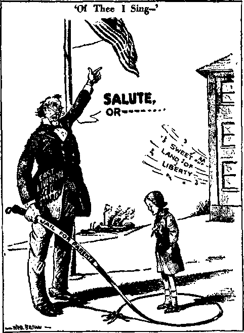
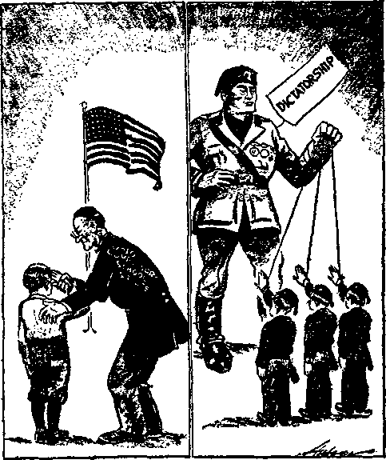

A JOURNAL OF FACT HOPE AND COURAGE
iiiiiiiiiiiimiiiiiiiiiimmiiiiiiiiiiiiiiiiiiiiiiiiiiiiiiiiiiiiiiiiiiiiiiiii
in this issue
FASCISM (CATHOLIC ACTION) IN IRVINGTON, N.J.
RESOLUTIONS CONDEMNING FASCISM
COME AND WITNESS ZEAL FOR JEHOVAH
JESUS
HOME AND HEALTH
OBEDIENCE TURNS OUTCAST INTO A SON
lii!iiliniilllillllllllillilllllllllllllllllHIIIII||||l!llllll||||||||||||||||
every other
WEDNESDAY
five cents a copy one dollar a year Canada & Foreign 1.25
Vol. XVII - No. 427
January 29, 1936
। ■■ ■■ ii.
LABOR AND ECONOMICS
Huge New Apartments in Paris 278
The Kind of Labor Wanted 279 80,000 Polish Jews to Tel Aviv
SOCIAL AND EDUCATIONAL
Not All Policemen Pope-Controlled 262
Jehovah’s witnesses Protest
Olivet Forum Resolutions
Come and Witness the Zeal
An Interesting Letter to
Report Concerning the Persecutions in Germany
Another Report of Things Done
The Moffats of Northern Rhodesia 277
Obedience Turns an Outcast
FINANCE—COMMERCE—TRANSPORTATION
POLITICAL—DOMESTIC AND FOREIGN
Fascism (Catholic Action) in Irvington, N.J.
Hierarchy Horseplay in Germany 260 American Civil Liberties Union
Resist Fascism in New Jersey 261 The Folly of Lip-Service
“With Liberty and Justice for AH’’ 267
HOME AND HEALTH
Health Insurance Has Its Abuses 281 For a Stubborn Fever
Dried Foods Better than Canned 283
TRAVEL AND MISCELLANY
Golden Age Receives “Miraculous
RELIGION AND PHILOSOPHY
Unchristian Policy of Canadian
Instructions at Red Mass 269
---—-------------------
Published every other Wednesday by
GOLDEN AGE PUBLISHING COMPANY, INC.
117 Adams Street, Brooklyn, N. Y., U. S. A.
Clayton J. Woodworth President Nathan H. Knorr Vice President
Charles E. Wagner Secretary and Treasurer
FIVE CENTS A COPT
$1 a year, United States; $1.25 to Canada and all other countries.
Notice to Subscribers
Remittances : For your own safety, remit by postal or express money order. When coin or currency is lost in the ordinary malls, there is no redress. Remittances from countries other than those named below may be made to the Brooklyn office, but only by international postal money order.
Receipt of a new or renewal subscription will be acknowledged only when requested. Notice of expiration is sent with the journal one month before subscription expires. Please renew promptly to avoid loss of copies.
Send change of address direct to us rather than to the post office. Your request should reach us at least two weeks before the date of issue with which it is to take effect. Send your old as well as the new address. Copies will not be forwarded by the post office to your new address unless extra postage Is provided by you.
Published also in Bohemian, Danish, Dutch, Finnish, French, German, Greek, Japanese, Norwegian, Polish, Spanish, Swedish.
Offices for Other Countries
British 34 Craven Terrace, London, W. 2, England
Canadian 40 Irwin Avenue, Toronto 5, Ontario, Canada
Australasian 7 Beresford Road, Strathfield, N. S. W., Australia
South African Boston House, Cape Town, South Africa
Entered as second-class matter at Brooklyn, N. Y., under the Act of March 3, 1879.
•■rxg).--
Volume XVII Brooklyn, N.Y., Wednesday, January 29, 1936 Number 427
Fascism (Catholic Action) in Irvington, N.J.
PEOPLE of good will are well aware of the fact that in the state of New Jersey a most determined effort has been made to suppress the truth. The Devil, his invisible demons, the Catholic Hierarchy, their Protestant satellites, judges, magistrates, strong-arm squads, and so-called “patriotic societies” have combined and do combine to “suppress the activities of Jehovah’s witnesses”. Different cities have each taken their turn at this medieval business of suppressing the worship of Almighty God. Plainfield, Bergenfield, Summit, Maplewood, Jersey City and others have endeavored to set the calendar back and establish the rule of the Dark Ages.
And now cometh Irvington, New Jersey, with the stage all set to join the holy (?) campaign against Almighty God and His witnesses. Irvington is a Protestant city. But Thomas J. Holleran, recorder (may the Lord reward him according to his works), is a Roman Catholic. And it is quite evident that his honor Mr. Holleran is out to “break” Jehovah’s witnesses if he can. Irvington, if you please, is going to do the job right. No ordinary arrests for them. New and unusual and cruel punishments are to be inflicted.
The psalmist speaks of the gang “which fram-eth mischief by a law”. (Psalm 94:20) There you have step No. 1. The big argument of these mischief-framers is: “We must enforce our ordinance. We have no alternative. It must be enforced even unto the last period.” But the Irvington ordinance was not suitable. It had defects. Consequently a new one was framed to “suppress the activities of Jehovah’s witnesses”. And, it appears as though the mischief-framers of Maplewood had been called in as first aid in framing up the new law. The wording is the same; and in view of the fact that Maplewood has long endeavored—but without success—to “break” Jehovah’s witnesses, it is all part of the same conspiracy.
With their law framed and on the books, the Irvington Inquisition machine has now marched against the soul of the righteous and the innocent. (Psalm 94:21) And note, please, that the machinery of the law, and the might of the police department, was turned first against the innocent children. On December 1 John Dziat-kiewicz, age 10, and Mary Dziatkiewicz, age 15, were arrested and placed in detention. On December 7 Alex J. Sabo, age 15, was likewise confined. The “mischief-framers” of Irvington object to children’s giving their hearts to God, as Jesus did while He was a youth of twelve years, and would have them incarcerated because they delight themselves in the statutes of Jehovah and forget not His Word.
Cruel and unusual punishments are to be inflicted upon Jehovah’s witnesses to keep them out of Irvington. That appears to have been the order from the one directing this Fascistic campaign. Irvington parents, kindly take notice, that if you teach your children to love and serve Almighty God you are quite apt to be yanked into court on the charge of contributing to the delinquency of a minor. James and Anna Dziatkiewicz were on December 2 summoned to appear before Judge Thomas J. Holleran (may the Lord reward him according to his works), to answer to the charges of contributing to the “delinquency” of their children Mary and John. The preliminary hearing of these innocent parents of these admirable children was held before Judge Thomas J. Holleran (may the Lord reward him according to his works), on December 17. They were bound over to the grand jury. Bail of James was set at $1000, and of Mary at $1500. The prosecutor of the county reduced Mary’s bail to $500.
On December 17, 1935, Clara Schneider was tried at Irvington, before Judge Thomas J. Holleran (may the Lord reward him according to his works), and on that occasion Mr. Holleran, after setting out that he would stand by the
township’s mischief-framed ordinance, and that he would not care whether the person that ran up against it was a priest, minister, or a rabbi, fined this Christian woman $100 or thirty days in jail, for doing what she had a right to do, which right is guaranteed by the constitutions of both the United States and the state of New Jersey.
There are some people of good will in Irvington. One wonders how they like to see the spirit of the Inquisition operating in their midst. One wonders if they are in favor of the suppression of liberty and of the denial of the right of worship of Almighty God. One wonders if they approve their city’s being led around by the nose by those who would abolish all liberty in America. And one wonders if they are going to do anything about it.
The Siege of Troy Up to Date.
John Public, the poor, simple-minded ham, looking the Jesuit horse in the mouth, to make sure it is all right to bring it into the citadel of liberty.
In an address at the convention of the InternationalAssociation of Chiefs of Police at the Hotel Ambassador, Atlantic City, N. J., Winthrop D. Lane, of the division of parole of the Department of Institutions and Agencies in New Jersey, made the statement that if all sentences were carried out as imposed it would take twenty times the present capacity of reformatories and prisons to do it. Yet in that same state of New Jersey the police of Irvington, Maplewood and other places have repeatedly imprisoned the finest citizens they have in the state, Jehovah’s witnesses, solely on the ground that they have failed to request police permits to do that which Jehovah God has commanded them to do. In other words, the worst citizens in the community are given their liberty on parole so that the best citizens in the community can go behind bars to take their place. Nobody but a New Jersey judge under the thumb of Frank Hague, Roman Catholic boss of Jersey City, could ever do as foolish a thing as that. The judge does it to keep his job and to gain promotions.
Racket* in New Jersey and Pennsylvania
TN New Jersey and Pennsylvania school children are being expelled for not saluting the flag, and then their parents are being arrested for not sending the children to school. This is exactly the spirit of the Inquisition.
New Jersey vies with Germany and Austria in attempts to see how ridiculous she can make herself. On this point the Spokane Press says:
“In a New Jersey town, the school board has ordered principals to ‘make a survey of the attitude of pupils toward the republic’. This seems rather strange, in view of the fact that it is generally held, in the United States, that any citizen is entitled to hold any views he likes about the republic. Every advance in government has its origin in discontent and criticism. These result in protest and the invention of new plans and better methods for carrying out the basic American ideal, which doesn’t change. Meanwhile it is nobody’s business what anybody thinks, and even school students should enjoy the fundamental right to believe what they like, without interference from politicians.”
Hierarchy Horseplay in Germany
S INDICATING that there is a well-founded belief of substantial accord between the pope and Hitler, a two-column article in the New York Times, issue of November 3, 1935, concludes as follows:
“The Catholic Hierarchy, which has preserved its independence ancient, can afford to take the government statements regarding paganism at their face value. The Confessional churchmen remain hesitant and suspicious. In the offing they see a threat in a national church constructed on a political basis. They are wondering if the recent conciliatory gestures and actions of the regime may not partake of something of the character of the classic horse left before the walls of Troy.”
New York City, Dee. 18—The question of the right of school children to refuse on religious grounds to salute the flag and pledge allegiance will be fought out in the case of Alma and Vivian Hering, Jehovah’s witnesses, of Secaucus, N. J., according to an announcement made by the American Civil Liberties Union today.
A petition of appeal against the expulsion on November 1 of the Hering children, aged 6 and 11, from Lincoln Public School was served today on the Secaucus Board of Education and will be filed tomorrow with the Commissioner of Education of the State of New Jersey.
This case is regarded by the Civil Liberties Union as a test of the issue which has been raised by expulsion on the same ground of children of members of Jehovah’s witnesses in New Jersey, Pennsylvania, and Massachusetts.
“The law requiring a salute to the flag and a pledge of allegiance in New Jersey is attacked,” the Union said, “as unconstitutional as applied to religious objectors and as impossible of legal enforcement as regards other children. It is our belief that similar statutes in other states can be challenged on much the same grounds. We cannot believe that the courts will countenance depriving children of their legal right to a free public school education on religious grounds.”
The thirty-page petition prepared by Abraham J. Isserman of the Newark law firm of Isserman and Isserman, representing the Civil Liberties Union and Jehovah’s witnesses in the case, challenges the application of the “salute the flag” law to religious objectors as violating four sections of the state constitution and the “due process” and “equal protection of the laws” clauses of the Fourteenth Amendment to the federal constitution and the New Jersey Public School laws themselves. In all the petition raises 69 objections to the expulsion, in behalf of John and Ella Hering, the parents, and Alma Hering and Vivian Hering, the children.
Assisting Mr. Isserman in handling the case are 0. R. Moyle, general counsel, and Jacob Karkus, New Jersey counsel for Jehovah’s witnesses. It is understood, according to the Union, that an adverse decision from the Commissioner of Education will be appealed to the New Jersey Supreme Court, the New Jersey Court of Errors and Appeals, and, if necessary, to the Supreme Court of the United States.
Challenging the possibility of lawful enforcement of the present statute, Chapter 145 of the New Jersey Laws of 1932, Mr. Isserman held:
1. That every town Board of Education in New Jersey violates the law which requires that children repeat each day “The Oath of Allegiance”. What is repeated is not the oath, but a pledge of allegiance.
The oath reads:—“I ... do sincerely profess and swear, that I do and will bear true faith and allegiance to the government established in this state under the authority of the people, so help me God.”
The pledge in common use reads:—“I pledge allegiance to my flag and to the republic for which it stands. One nation, indivisible, with liberty and justice for all.”
2. It is doubtful whether school teachers are legally qualified to administer “the oath of allegiance”. According to the law, the lowest grade official who may perform this ceremony is a notary public, declares Mr. Isserman.
3. The law itself violates all accepted canons of international law in requiring aliens to salute the flag and take an oath of allegiance to a country not their own.
4. Very young children have never been permitted in court to take oaths, and yet the Board of Education has expelled Vivian, who is but six years old, for refusing to take an oath.
5. The parents themselves, the petition indicates at length, are placed in the difficult position of facing conviction in proceedings already begun before the Secaucus Recorder’s Court as disorderly persons for not sending their oldest child to school when she is not permitted by the authorities to attend schools. If convicted under the Disorderly Persons Act they may be given a year’s imprisonment. The parents have excellent grounds for a civil suit against the Board of Education for infringement of their rights, according to Mr. Isserman.
On the matter of the unconstitutionality of the law as it relates to the children and their parents, Mr. Isserman raises the following points. It is held invalid:
In depriving the children of “the privilege of worshipping Almighty God in the manner agreeable to the dictates of their own conscience” guaranteed in Section 3, Article 1 of the New Jersey Constitution.
In depriving the defendants of “the civil rights” to an education in a public school guaranteed under Article 1, Section 4, of the State Constitution.
In violating Article 4, Section 7, of the constitution, which established free schools “for the equal benefit of all the people”.
Under Article 1, Section 1, of the constitution, “in that it unreasonably restricts the unalienable rights of said Alma and Vivian Hering of enjoying and defending liberty and obtaining happiness by subjecting them to the penalties of dismissal from school and of juvenile delinquency.”
In violating Article IX, Section 125, of the New Jersey State School laws, prohibiting exclusion of children from the schools “on account of their religion”.
Similar objections are raised regarding the parents, John and Ella Hering, who it is charged have been deprived on religious grounds of the property and civil right to educate their children in public schools and been subject on the same grounds to prosecution under the Disorderly Persons Act.
Turning to the federal constitution, the law is held to violate the “due process clause” as it affects both children and parents in that it unreasonably restricts the liberty of both parents and children “who are conscientiously unwilling and unable to salute the flag and take a pledge of allegiance”. The law is further held to violate “the equal protection of the laws” clause of the 14th Amendment in that it discriminates against children in school in requiring them to take an oath not asked of the rest of the population.
Not All Policemen Pope-Controlled
OT every police officer in New Jersey wears the badge of servitude to the Papal empire. Many while locking Jehovah’s witnesses in the cells have said, “We hate to arrest you folks, but have to obey orders.” And just the other day in a New Jersey town (the name is withheld, for we would hate to see this officer lose his job just for acting civilized) a detective hailed one of Jehovah’s witnesses and questioned him as to his activities. Then he said, “Oh, you are a Jehovah[’s witness]. That’s all right. I am a Jehovah [’s witness] too. Good for you.” And then he drove off.
We respectfully submit that the place where this detective does his thinking is not filled with concrete. He is one of many policemen who are not at all in sympathy with the efforts of their superiors to throttle liberty and disregard common sense in the United States.
Jehevah’s witnesses Protest Papalistic Peddling LT1HE GOLDEN AGE notes this in The Leader J- (Wildwood, N.J.) of December 26, 1935: Veterans Protest ‘Religious’ Peddling
Peterson-Little Post of Cape May, Take Action Following Refusal to Recognize Flag At the semi-monthly meeting of the Peterson-Little Post No. 386, Veterans of Foreign Wars of the U. S., held at Cape May on Thursday, the following resolution was adopted:
“Whereas, from time to time religious sects calling themselves Jehovah’s Witnesses, Rutherfordites et cetera, have visited Cape May City and have annoyed the residents by peddling religious tracts from door to door, and
“Whereas, these above mentioned religious sects have instructed their members and member’s families to refuse to salute or take oath of allegiance to the American Flag, stating that it is contrary to the teachings of their sect, and
‘ ‘ Whereas, the City Council of Cape May, recently passed an ordinance prohibiting the peddling of merchandise from door to door within the city limits, “Be It Resolved, that these peddlers of religious tracts be placed in the same category as the peddlers of merchandise and subjected to the same punishment as provided for in the ordinance.”
Guests at the meeting were Frank Y. Force, Commander of the 9th District County Council, V. F. W., and J. Weintraub, Officer of the Day of the 9th District County Council, V. F. W.
The coming Bonus fight was one of the chief topics discussed.
As an antidote to this outburst from the “patriotic” cult Jehovah’s witnesses present the following:
Whereas, from time to time the Veterans of Foreign Wars and other “patriotic” cults, have annoyed order-loving people by peddling their Hitleristic and Papalistic and Fascistic ideas to them; and
Whereas the above-mentioned organizations would require, force and coerce all peoples to worship in accordance with their ritual of ceremonial “patriotism”; and
Whereas such action is contrary to common sense, common decency and the well established principles of liberty, freedom of religion and freedom of worship;
Therefore, Be It Resolved that these purveyors of Hitleristic, Papalistic and Fascistic ideas be placed in the same category as the dictators, popes, autocrats, despots, great moguls, kaisers, czars, caliphs, oligarchs, Caesars, caciques and tycoons, and subjected to such punishment as Jehovah of Hosts will in due time provide.
By Olivet Institute Free Forum of Chicago, Illinois
WHEREAS it appears that in different parts of the United States the issue of religious liberty is becoming vital, aroused by the pretense that saluting the flag and swearing allegiance to the American flag must become the primary duty of citizenship, to be imposed by law, and enforced by strict penalties, upon the present and future generations, even to the extent of depriving children of the benefit and advantages of free education in free schools of a society supposed to be based on voluntary association of peoples respecting the rights of one another to grow in accordance with the dictates of private conscience as the natural prerogative of man; and
Whereas it appears that the demand for compulsory saluting the American flag, and swearing allegiance to the same, is subject to suspicion because no necessity exists for the same, and such compulsion is inconsistent with a state of free society, and tends to breed discontent, dissatisfaction, and rebellion against established authority, due to proper fear of attempted usurpation of power, backed by entrenched authority, under color of national emergency, and necessity; and
Whereas it appears that this compulsion is designed and intentionally planned to mislead the American people, and impose upon the American people a Fascist state of mind, so as to make the government superior to the people, instead of deriving its just powers from the consent of the governed; and
Whereas such a state of mind is the beginning of “Government by Intimidation”, under color of law, daringly and contemptuously designed to be imposed upon the American people regardless of their former proud boast that we have maintained and preserved the right to all to grow in accordance with the dictates of private conscience; and
Whereas such a state is intended primarily to deprive the American people of the right to determine for themselves a free choice as to how better secure to themselves and their posterity the blessings of liberty and the bounty of Providence; and
Whereas it must remain a fundamental principle of free government that government exists for the sole purpose of securing to the people the right to life, liberty and the pursuit of happiness, on equal terms, under equal conditions, at all times and under all circumstances; and
Whereas this government was instituted to secure these rights inviolate to all, without distinction of race, creed, or color, or previous condition of servitude, it must maintain the separation of church and state, so that man may worship his Creator according to the dictates of his conscience, to attain the fullness of life, and life more abundantly; and
Whereas Thomas Paine, who first declared to the world that “these United States ought to be, and are by right, free and independent”, in asserting the rights of man, declared, “There is a single idea, which, if it strikes rightly upon the mind, either in a legal or a religious sense, will prevent any man, or any body of men, or any government, from going wrong on the subject of religion; which is, that before any human institution of government was known to the world there existed, if I may so express it, a compact between God and man, from the beginning of time; that religious devotion, which is a part of this compact, cannot so much as be made a subject of human laws; and that all laws must conform to this prior existing compact”; and
Whereas those who dare exercise that religious devotion which is a part of this compact, by refusing to salute the flag or swear allegiance to the American flag as a symbol of earthly power, claim merely that right to which all human laws must conform, and any attempt, under color of law, to nullify this prior existing right is a denial of religious liberty and freedom of conscience supposedly guaranteed by the Constitution of the United States and preserved under its Civil Rights Code; and
Whereas the attempt to impose, by law, as a primary duty of citizenship, the obligation of saluting the American flag, and swearing allegiance to it, is inconsistent with the rights of man in a free society, tending to degrade man by making him a subject of government, under a symbol of power, substituting the state for the people, as the source of all power and authority in government: and
Whereas the president of these United States recently declared that this nation and its people remain dedicated to the principle of maintaining religious liberty, yet, notwithstanding, inasmuch as religious liberty cannot exist without freedom of conscience, as its foundation and
security, while this declaration was being made it also became public knowledge that in the District of Columbia, and in various States of the Union, persecution and prosecution were being engendered against a certain class of people, mainly children, who, regarding their religious faith in the matter, and in the exercise of the rights of free persons, in a free state of society, refused to swear allegiance to the American flag or salute the same as a symbol of earthly power, which, being true in principle, as by its nature it is subject to correction, improvement, change, decay and death, therefore cannot bind man to its destiny without attempting to secure the enslavement of man; and
Whebeas such refusal to swear allegiance to the flag, or salute the same, under compulsion of law, is an act of free conscience retained in a free system of society, the same is consistent with the noblest and highest ideals which made this nation and this people possible, and tends to establish a wholesome, elevating and progressive spirit within these United States; and
Whebeas the historical development of these United States and its people is born of the spirit of “protest” against injustice in government, and a character of “non-conformity in religion”, the sole justification for the continued existence of these United States, as a free society, must remain by preserving the right to “protest” against injustice, and refusal to conform, as a matter of free conscience, so that greater good may be attained and greater blessings achieved; and
Whebeas swearing allegiance to the American flag, or saluting the same, is not conclusive of good citizenship, inasmuch as base and cowardly persons are most prone to submit to compulsion, intimidation and deprivation of rights, as men and as citizens, the attempted imposition, under color of law, of such an obligation as duty appears to be an attempt to cover up usurpation of power, or planned usurpation of power and authority, whereby the people of these United States may be compelled to submit to further deprivation of the rights of man, and as citizens in a free society; and
Whebeas democratic government has not always existed, nor has the Christian religion been the accepted faith of man, at some time in the past both appeared as a menace to the existing order of things, yet, notwithstanding, through the struggles, sufferings and martyrdom of noble souls and high-born spirits, we have enjoyed the blessings of both, and the consciousness of liberty accruing therefrom; and
Whebeas in all ages it was the daring and courageous minority that dissented, protested, and refused to conform, to the existing order of things; who dared to appeal from the keepers of Divine Truth, to Divine Truth, itself; from the trustees of God, to God, Himself, and thereby brought man into life, and life more abundantly; into consciousness of his rights and proper place in society; and
Whebeas, as we are by nature “protest-ant” and in character “non-conformists”, we have refused to allow the doctrine of infallibility to be written into our laws, we thereby acknowledged that man lives in a state of continual change, growth and development, and that he ought not to be bound by the “dead hand” of any generation from realizing a better life, and greater things in life; and
Whebeas every scheme, design or plan tending to infringe upon the rights of man, and subject him to the domination of government, seeks to deprive him of liberty dearly bought, and blessings attained by great sacrifice, and the same ought to be challenged by all free men, and true citizens, jealous of their rights and honors, now,
It is, therefore, hereby unanimously besolved that we, members of the Olivet Institute Free Forum, of Chicago, Illinois, conscious of our duty to others in the matter, do protest to the president of these United States, and to the United States Congress, and appeal directly to the chairman and members of the Committees on Judiciary of the Senate and House of Representatives, against any and all attempts to impose upon the American people a Fascist form of government, or state of mind, by force, compulsion of law, or intimidation under the pretext that swearing allegiance to the American flag, and saluting the same, is conclusive of good citizenship, necessary to the same, or is the salvation of this nation and the only means whereby our liberties can be maintained and preserved, and remain secure; and
It is further besolved that we call upon the president of these United States, as free citizens in a free system of society, seeking to maintain the same, and secure to our posterity the blessings of liberty, and ask that he proclaim to the world that religious liberty, including the freedom of conscience, remains secure and sacred within the jurisdiction of these United States, to all people, and each and every one of them, and that no person ought to be persecuted or prosecuted for exercising such rights, or doing any thing consistent with their religious faith in the matter, including the right, as free persons, and free citizens, to swear allegiance to the American flag, as the symbol of earthly power, or salute the same as a prerequisite to citizenship or to enjoy the rights of free education in free schools, its benefits and advantages, which is necessary to maintain a democratic form of government; and
It is further resolved that a copy of these resolutions be sent to the president of the United States, to the United States Congress, and to the chairman and members of the Committees on Judiciary of the Senate and the House of Representatives, and to such other bodies as are interested in maintaining religious liberty and a free system of government, in these United States.
Adopted unanimously this 5th day of December, 1935, by the Olivet Institute Free Forum.
John L. Metzen, Chairman.
A Punxsutawney (Pa.) Editorial
ELIGIOUS freedom is our pride and our boast, and in the particular case of the
Canonsburg brother and sister who have declined to salute the flag, school authorities are making a mockery out of that religious freedom, by talk of enforcing respect for the flag. To ask the attorney general of Pennsylvania to rule as to whether or n<5t a boy and a girl down Canonsburg way should or should not be made to salute the flag, is, it seems to us, about as silly as asking him to rule whether or not left-handed people should be forced to walk on the left side of the street.—From an unidentified paper.
The Folly of Lip-Service
EOPLE who insist our citizens must give lip-service to the flag are destroying the very thing which soldiers thought they were fighting for: democracy.
The danger that may come of the forced salute is greatest in the cases of growing boys. It puts into their minds the idea that the United States is enslaving them, as Russia, Italy, Germany and such countries do to their subjects. It implants in the growing mind the thought that he was created to serve the state.
Many who might not be willing to do homage to the Stars and Stripes are doing so today rather than create a stir. Nobody should be allowed to hide behind the flag by means of legislation that defeats its own purpose.
This is a free country and it is in that spirit that practically every American pledges his allegiance to the flag. That editor who said the law was passed so as to leave nothing to chance in the case of the pupil does not take into consideration the fact the minds of these youngsters are growing and absorbing new thought at a great pace. To force so sacred and traditional a thing as Old Glory down his throat at that stage of his life is suicidal. It breeds disrespect and rebellion for the very thing he should learn to love, honor, respect and defend of his own free accord and will.—Terence P. Finegan, national commander of the United American War Veterans, in the Kearny (N.J.) Leader and Bergen Ledger. Mr. Finegan (a Catholic by faith) is manifestly a thoughtful man.
Relief (of Politicians) in Kentucky
THE New York American carried a photograph of an affidavit by Hiram Steadman, of Kentucky, that he was warned by the relief people that he must vote the Democratic ticket or be cut off the relief rolls.
(Editorial and Cartoon from Akron [Ohio] Beacon Journal. Used by permission.)
MEMBERS of the school board of East
Liverpool, Ohio, must have been made very happy by a ruling just handed down by Attorney General John W. Bricker.
For the opinion assures them of their complete legal right to bully four very young children and their parents, in an effort to force upon them their own narrow and intolerant superheated patriotic convictions.
They have been told that it is their privilege to crush the spirit of those four youngsters, to grind the religious precepts taught them by the parents under the merciless heel of vested authority. They have been given licence, under that ruling, to interfere with the sacred instruction of a mother to her child.
They have been given freedom to seek to malign, to thwart and challenge a parent’s inherent right to the respect, the confidence and the loyalty of his own offspring.
Is it treason to decline
They have been told that they dare, with the full prestige and power of the great commonwealth of Ohio behind them in their smug concept of patriotism, to say to four children who refused to salute the flag, on the grounds of religious principles:
“Your parents are wrong. You must disbelieve what they have taught you. We are right. You must believe what we say.”
And, glory of glories, if the parents henceforth dare to maintain their beliefs, counter to the now legally hallowed opinion of the stern and frosty educational tyrants, then the parents can be sent straightforth off to jail.
Ridiculous? Not for one minute.
The threat already has been made, and there is no reason to suppose it an idle gesture.
The four children, two high-school and two grade students, have been under suspension for three weeks as a result of their refusal to salute the flag and take the oath of allegiance. In each instance the children’s parents were members of a sect known as Jehovah’s witnesses.
This sect believes the oath is a commitment to war and war methods. They strive for world peace, and refuse to take up arms against brother men as the practical way to achieve peace.
to take an oath which you believe is a pledge to kill other people, with as much right to live as ourselves? At very least, there is very broad ground for argument.
Armed with the oath ruling, the East Liverpool school board has decided to enforce the educational law, which requires parents to send their children to school until they are 18 years of age. The penalty for failure is jail.
But, to get the children back in school, from which they have been suspended, the quartet must declare their allegiance and, in their mind, take the oath to kill.
What mockery there is to the attorney general’s opinion that requirement of the oath by the school board would not “constitute an invasion of one’s right to worship Almighty God according to the dictates of one’s conscience, or interfere with the rights of conscience as guaranteed by the constitution of Ohio”.
If it doesn’t constitute such an invasion and such an interference, what does it do?
If we read about Adolf Hitler, Benito Mussolini or Josef Stalin herding countrymen off to jail for refusal to subscribe to their dictatorial systems, we would be enraged. We’d say “It couldn’t happen here”,
Well, here it is. And here we are, dictating, bludgeoning, bullying; interfering with freedom of thought, or conscience, and religion; jailing those who dare to disagree with it.
What these Fascist-minded patriots put out of mind is that America grew to greatness as the refuge and haven for those who were oppressed and persecuted; that it always has been a sanctuary for victims of religious and political intolerance.
Its principles are too broad to require compulsory oath-taking and jail-threat allegiance. Traditionally it has commanded admiration the world over, and loyalty and adherence at home by its guarantees of personal freedom of thought, of spoken and printed word, and noninterference with conscience and religious beliefs.
The American flag must not be permitted to become a symbol of fear, oppression and intolerance. It must forever remain the emblem of the free— loved, honored and respected.
Is This Next?
“With Liberty and Justice for All”
(Editorial and Cartoon from Columbus [Ohio] Citizen. Used by permission.)
PLEDGE allegiance to my flag, and to the
-*■ Republic for which it stands, one nation, indivisible, with liberty and justice for all.”
That’s a simple pledge, one that nearly every American is proud to make freely and of his own will. It imposes no obligations not inherent upon an American by simple virtue of his citizenship.
But there are those to whom it is repugnant for religious reasons. And there are vastly greater numbers to whom it may become a hateful mockery if it is exacted under duress and force, as Attorney General Bricker’s ruling says it may be from school children at the discretion of boards of education.
By what right of law or reason has anyone the power to compel an American to take an oath against his will? What does it mean if it is taken? Since when has any oath exacted under duress had force and effect in the eyes of either God or man?
One may command the physical rendition of an oath. One may force a child to salute the flag until his arm grows weary. But who will stop the inner seethings of humiliation and hate nurtured by compulsion?
We hope that someone makes an issue of this. We hope that it is carried to the highest court of the land. We cannot believe that the Supreme Court will sustain this attempted regimentation of loyalty. Such is the essence of Fascism. It is only one more step to “I pledge allegiance to Franklin Calvin Hoover, and to the dictatorship for which he stands—
What Are We to Gain?
WHAT are we coming to when we expel from school children who refuse, for religious reasons, to salute and pledge allegiance to our flag?
The flag is a beautiful symbol, the symbol of the aspirations, the ideals, the sacrifices, the institutions, which make our great United States. But it is only a symbol, not the thing itself. So long as these children, in their daily lives and school conduct, do nothing to injure society, why should they be persecuted because their unusual religious doctrine discourages them from saluting and pledging allegiance to a symbol? What is to be gained by expelling such children from school? Will it increase their respect for country? Will it increase their classmates’ admiration for their government ? Does it make of the flag ceremony a natural expression of love and loyalty or an instrument of suppression? Who feels better because of such methods or forced patriotism?—Hugh Nixon, in the Boston Post.
Letter signed by a committee of French Canadians addressed to their fellow citizens
<<TS IT not a fact that our leaders complain * that we are but ‘the hewers of wood and drawers of water’ (de bois porteurs d’eau et de bons seieurs de bois,—I’Evangeline, May 9, 1935) for the English-speaking people? In the same editorial I’Evangeline further complains that ‘our system actually produces boys and girls who have no knowledge of either the English or French tongue’ (Notre systeme actuel produit des jeunes gens et des Jeunes filles qui ne connaissent ni l’anglais ni le fran-cais). They are the brilliant products of our official educational system whom we are sending out to acquire bilingual jobs. Why ? Because of the domineering policy of the French clergy. We pay more attention to the catechism, rites and ritual of our church than we do to the actual things which would put our children in as good a position as the English-speaking children. Our clergymen say we must not send them to high school; we must not mix with the English; we must not do this, or do that—the result being that, instead of being on equal terms with our English-speaking friends (and they would be our friends if we would let them), we but play second fiddle to them.
“What we want is—Our schools like the English schools. For instance, lay teachers, men and women—men for the boys, and practical women, instead of nuns, for the girls. Cut out the religious part during weekdays and teach them how to face the problems of this life, not so much the hereafter.
"Our educational plan (French) is so bad and our clergy bleeds us so persistently that we have no money left which we could so profitably use to educate our children. In other words, our French clergy, many of whom blasphemingly classify themselves as God, think so much of having magnificent churches, owning beautiful cars, lovely homes, and living on the fat of the land, that it is time we woke up and insisted on a square deal. Give our children a chance. Put practical things in the hands of practical men. You can see how little is left for educational purposes from the huge sum the church requires, as, for instance, in the 1932 financial report of the Parish of l’Assomption of Moncton, the Church received $57,108.22, the expenditure being $50,567.04. This works out, with 1,158 families, at about $52 per family.
“Another instance of the total lack of cooperation shown by our French clergy and the unchristian policy adopted by them demonstrates to us how we are deprived of the many benefits which we would otherwise enjoy, as shown by the following:
“Mayor Blakeny was given $800 for community welfare work. To properly dispense this he called the clergy of the city together, and all the Protestant clergy agreed to name a committee in agreement with Mayor Blakeny5 s plan of community welfare in which the unfortunate would have benefited. However, the Catholic clergy would not agree to the plan, and asked that their share be given directly to them. Mayor Blakeny had another splendid suggestion. The plan was to open a soup kitchen for the benefit of the poor children of the city. It is understood the facilities of the Y.M.C.A. were offered free. The clergy of the city were again invited. All agreed to help the plan, St. Bernard’s representative being also in accord with the movement. But the French priest opposed it on the grounds that it should not be in the Y.M.C.A., and also that Protestant children should not sit with French Catholic children.
“Now you see, French Canadians, what this propaganda of hatred and the policy of our French clergymen is bringing us to: Misery, hardships, poverty, unemployment. Isn’t it time for a change? Would it not be better to cooperate with our English-speaking neighbors in the matter of language, education, and all social activities? The present policy of our French clergymen is very dangerous and unchristian. Let us wake up—insist on the same educational facilities as our English friends. Let us decide to co-operate, and then we will all the sooner bring about that for which we all aspire—a united Canada, a free and happy people.”
The Sea of Arbitrary Power—Jesuitism
IN AN address at Washington Senator Borah said of present tendencies: “There can be no such thing as a great federal union without great commonwealths on which it may rest Once the dike of constitutional restraint is opened and the sea of arbitrary power which lies behind is invited in, the inundation of personal liberty and right will ultimately be full and complete. We should strengthen the dike at every point.”
NEW YORK papers made much of the fact that about 100 judges and lawyers, including Protestants and Jews, attended Red Mass at St. Andrew’s Roman Catholic church, before starting their next judicial year. They came together to hear the “Very Reverend” Edward J. Walsh tell them of what he called the “damnable vice” of perjury in our courts. And for fear he did not state the official Roman Catholic Hierarchy’s view of perjury, it is here set out.
Alphonso Maria de Liguori, bishop and founder of the order of Redemptorists, taught as follows, and his teachings are still ‘perfectly good theology’ for “Reverend” E. J. Walsh: “A culprit or a witness questioned by a judge, but in an illegal manner, may swear that he knows nothing of the crime about which he is questioned, although he knows it well, meaning mentally, that he knows nothing in such manner to answer. He may swear that he knows nothing, when he knows that the person who committed the crime committed it without malice; or if he knows the crime, but secretly, and there has been no scandal. When a crime has been well concealed, the witness, and even the criminal, may, and even must, swear that the crime has never been committed. The accused may deny his crime under oath, understanding that he has not committed this crime in such a manner as to be obliged to confess it. He who has sworn to keep a secret is not obliged to keep his oath, if any consequential injury to him or to others is thereby caused. If anyone has sworn before a judge to keep the truth, he is not obliged to say secret things. ... We may be allowed to conceal the truth, or disguise it under ambiguous or equivocal words or signs, for a just cause, and where there is no necessity to confess the truth.” The Lateran Council officially declared: “They are not to be called oaths, but rather perjury, which are in opposition to the welfare of the Romish church.” Pope Innocent XI “infallibly” declared: “If any, either alone or before others, whether asked or of his own accord, or for the purpose of sport, or for any other object, swears that he has not done something else which he has done, or in a different way from that in which he has done it, or any other truth that is added, he does not really lie, nor is he perjured.” Antonio Escobar of Mendoza, Jesuit, another recognized ‘authority’, also said: “A man may swear that he never did such a thing, meaning within himself that he did not do so on a certain day, or before he was born, or understanding any other such circumstances, while the words which he employs have no such sense as would discover his meaning.” He also said: “Promises are not binding, when the person in making them had no intention to bind himself.” All these points on perjury may have been brought out by the “Very Reverend” “Father” Walsh, but they may not; and inasmuch as he is quite right that perjury is such a damnable vice, it is good for these Protestants and Jews that are just getting initiated into the Red Mass to know the facts. The “Very Reverend” Walsh referred to the Red Mass as a gathering around God’s altar. He called the legal profession the custodian and guardian of the great Christian Catholic concepts of social truth and social justice. If the judges at the Red Mass are going to go by the official Catholic concepts, then God help the honest and truthful.
Jews and Protestants at Red Mass
THE process of turning America over to the Roman Catholic Hierarchy goes merrily on. For the present, but only for the present, there are still a few Jews and Protestants on the judicial bench in New York city. The New York Times makes record of the fact that fifty-five judges, wearing their judicial robes, marched two by two from the Federal building to the Catholic church that was left standing right in the midst of the civic buildings for that purpose, and attended a Red Mass; “Reverend Father” Edward J. Walsh, preacher. Why Jews and Protestants have to go to Red Mass in their judicial robes is not merely a matter of their own business, but is very much a matter of public concern. If honest men, they know they have nothing in common with what goes on at a mass, and they could readily find that if they are active for their respective faiths they are marked for slaughter as soon as the Catholic Hierarchy feels that it is strong enough to put it across. See the regurgitations of “Reverend Father” Harney on this point.
Catholic Influence in British Royal Family OUR SUNDAY VISITOR contains a dispatch from London claiming that Queen Victoria was a Catholic, confessing regularly to a French priest; also that King Edward was a Catholic. The leaning of King George toward Catholicism is well known and often commented on.
FJTHE GOLDEN AGE acknowledges receipt of •*. one “miraculous medal”. It came in an envelope If inches square, bearing upon its face the following: “The enclosed Miraculous Medal touched the Chair in which Our Lady sat during her first apparition to Blessed Catherine La-boure in 1830. It is blessed. The Central Association of the Miraculous Medal, Germantown, Philadelphia, Pa.”
Along with the envelope which contained the medal was additional information marked, “Imprimatur D. Card. Dougherty, Archbishop of Philadelphia, September 25, 1935.” So now, starting off with a “blessing” and being primed with Dennis Dougherty’s priming, one looks further to see what it is all about. It seems to be something affecting the financial interests of “Rev. Joseph A. Skelly, C.M., Director, 100 East Price Street, Germantown, Phila., Pa.”
The green circular that comes along with the medal shows that the lady who is running this “purgatory” scheme is very forgetful. Her memory needs priming, and this is something Dennis should see to. Thus the circular says in one breath, “I am the Mother of the Poor Souls in Purgatory, for all the sufferings they have deserved are being mitigated every hour more or less by my intercession”; and then fourteen lines farther away is the startling information, “How sad it is to reflect that there must be millions of utterly forgotten souls in Purgatory.”
Well, that certainly is a great way to run the place. Here Mary, through “Father” Skelly and Dennis Dougherty, is supposed to get plenty of dough for these medals, and then when the medals are all “blessed” and everything Mary goes and forgets millions. But maybe the millions she forgets are those that did not buy the medals. This makes one all the more interested to look further into the medal racket.
The reading matter says, “The Church has always taught that it is a blessed and salutary thing to pray for the dead. Your pity alone will not help them.” Herein lies a gentle suggestion that it is necessary to come across with the long green; and the next sentence makes this still plainer. “For St. Chrysostom says, Not by weeping are the departed aided, but by prayers and alms.”
Down near the bottom of the first page comes the sad news, “The membership fee for living or deceased is 25 cents a year.” If you go down in your pocket for but two bucks, sometimes called “simoleons”, you can steer yourself around “purgatory” for one year and take seven erring friends along with you, and they can be either living or dead.
Either way, you are short only $2, and one of the eight, and that is you, and not any of your dead friends, can have the “Miraculous Medal” around your neck when the procession starts, and if you dodge the hottest places you will still have it when the time comes to cough up another 25c apiece for yourself and the same or another seven friends, a year later.
The medal itself should be described, besides the statement that it is “a beautiful Art Miraculous Medal”. Getting down to brass tacks, the medal is of the same length as a dime, and it is two-thirds as wide, and a little more than half as thick. Stamped out of aluminum, the cost ought not to be over 1c, and allowing for postage and advertising and “blessings”, the profit ought to be around $1.90 for each medal.
Stamped in the aluminum are the words “O Mary conceived without sin pray for us who have recourse to thee”. Mr. Skelly in his letter says: “I am confident that you will cooperate with me in promoting devotion to the Blessed Mother through her Medal”; so it seems that Mary is involved in the matter, and, besides, it is “Approved by His Eminence Cardinal Dougherty, Archbishop of Philadelphia, and recommended by His Excellency, the Apostolic Delegate”, meaning Mr. Cicognani.
It seems that not only is this “Medal” good to have in that “hot place” called “Purgatory”, but, according to the testimonials, persons wearing the “medal” have been caught in automobile accidents, operated on for goiter, stricken with spinal meningitis, and given birth to twins. It is not probable that all these things will come to The Golden Age as a result of having this “Medal”, but it is best to wear fireproof socks and asbestos underwear in these days, so as to be all O.K. no matter what happens.
The old newspaperman that sent in this medal was mean enough not only to send it, but also to say, deprecatingly: “Look at all the fine printing, fine premiums, fine promises, fine prayers, fine prestidigitation, fine profiteering, fine piffle and fine postage in this fine package which went through the fine permit meter of Prelate Pfar-ley’s Philadelphia post office for one penny! Pshaw! Poor old Purgatory is in the Peasoup if you pfail to pfall pfor it!”
Saint Anthony Rarely Fumbles
EVEN the best catchers will sometimes miss one at first base, or out in the field; and here is some literature from St. Anthony Messenger, 1615 Republic St., Cincinnati, Ohio, admitting that some of the liners sent to St. Anthony get by him. Thus the advertising matter says: “A confident prayer to St. Anthony usually brings results.” That is to say, it all depends on how St. Anthony feels. If the priest has been well oiled, then Anthony can be depended upon to deliver the goods; but if the priest has been neglected, then why should Anthony put himself out to help somebody who is trying to renig financially? The literature shows just how to pray, to get on the right side of Anthony; so if anybody doesn’t get results, why, the reason for failure is self-evident. The literature shows how a side line can be worked to get Anthony to do his best. One can send for a lily that has been “blessed”; and the result is: “People often carry portions of the blessed lily about them, sewn in a small bag, in order to find relief in illness, or to overcome temptations against the holy virtue.” What with all the religious goods one is supposed to hang around his neck, or have tied around his waist, it seems as if it might be a good idea to have a “holy” traveling kit made in which one could carry these “holy” objects around; still that might make St. Anthony sore. It is best to be careful. It is claimed by some that St. Anthony never washed his feet. This makes it specially necessary to be careful on days when the weather is hot and sultry, for a man with gummy feet is liable to be peevish. It is entirely out of order at any time to ask Anthony where it was you laid those clean socks you intended to wear. He answers only civil questions.
The Seraphic Mass Business
THE Seraphic Mass Business of “Reverend Father” Patrick, O.S.F.C., Franciscan Friary, Crawley, Sussex, England, is making progress, financially. The proof is that it is able to run advertisements in the papers, selling masses. Usually the dead get a mighty bad break on this “Purgatory” graft, but here is an exception. Live ones must pay £1 for this fire protection for all time, but the dead can get by for 8s. Now isn’t that liberal? It is tough enough to be parked in an oven for a thousand years, with a good chance of being forgotten and left there (for it seems that nobody gets out unless a friend comes across with the long green, to bribe the vicious caretakers of the place). But it is still worse to get the bake oven and then find that you have to pay just as much as if you were alive, whereas, as a matter of fact, you are dead as a doornail and therefore have no regular income of your own. So it really does seem that “Reverend” Patrick, in shaking down the living for 2| times as much as the dead, is moving in the right direction. However, another good idea would be to show the right spirit by letting both the dead and the living have their masses free, or, still better, to admit that the whole thing is a conscienceless fake, and that the mass is nothing, does nothing, and in all honesty and decency should be forthwith stopped. The association claims 187,000 masses a year; one every three minutes.
Who’d ’o’ Thunk It?
SAYS St. Anthony's Messenger: “The plainest Catholic knows more about the Bible than the most learned Protestant. The Protestant’s Bible is a make-shift affair, changed to suit individual or denominational tastes; entire books are omitted, etc. The Catholic has the unadulterated word of God in his Bible. Clearly, then the Catholic knows little about the Protestant’s Bible, but a bit more about his own. The Catholic ‘church’ is built on a rock, the pope, not on a book, the Bible. The Bible contains some of the teachings of Christ, not all of them. The Catholic believes all the teachings of Christ.” To which may be added “And then someI” It would certainly be refreshing to see some evidence of this “belief”.
The Bishops Should Get Together
THE Roman Catholic bishop of Westminster, J- England, said apologetically that the pope is a helpless old man that cannot do one thing to stop another World War, and yet Cardinal Hayes at Cleveland said that he is the “supreme shepherd of Christendom whose peerless leadership among the nations of the earth is verily a divine benediction to a bewildered and afflicted world. What a unique, pre-eminent and majestic figure the supreme pontiff presents among the world’s leaders and rulers: None is like unto him.” Seems as if these boys ought to get together on their canvass.
BARRING, perchance, a Jesuit spy, every reader of The Golden Age is honest and has the foundation upon which to build faith and hope. This is an earnest invitation to every one of these whose heart is right with God to participate in something he will rejoice to remember throughout eternity.
There have been conventions of Jehovah’s witnesses before, but never one like this one! In the United States (and Canada) alone, in ten places at the same time, it is more than a convention: it is an assembly extraordinary.
Select from the table shown herewith the place that is nearest or most convenient, and set aside Saturday, February 22, and Sunday, February 23, wholly to Jehovah God; not to do your own will, nor the will of anybody else, but His will.
I Los Angeles: C. V. Knemeyer, 1 I P.O. Box 755, Vernon, Calif. | | Baltimore.' Henry A. Rheb, | I 3246 Keswick Road, Baltimore, I | Md. |
| Birmingham : X. D. Best, 8604 Di- 1 | vision Ave., Birmingham, Ala.
| Boston : H. L. Philbrick, 31 St. I | James Ave., Boston, Mass.
I Chicago: J. C. Watt, 1130N.Dear- | I born St., Chicago, Ill.
| Cleveland: W. E. Brusman, | I 15202 Elderwood Ave., E. Cleve-
f 1317 East 31st St., Kansas City,
| New Yobk: Grover C. Powell, | | 124 Columbia Heights, Brook-
Pittsburgh : Pittsburgh company | of Jehovah’s witnesses, 907 Mid- i die St N. S., Pittsburgh, Pa. | Toronto : Watch Tower, 40 Irwin 1
| Ave., Toronto 5, Ont., Canada. |
Accommodations are prepared for everyone to stay over night Saturday night, and, if necessary, Friday night. Cafeteria service will be provided. State if white or black, male or female, how many in your party, how many in a room, when and how you will arrive, when you expect to leave, and rates desired.
Address your communication to the place shown in table herewith where you expect to observe and participate in the work of the people of Jehovah God. If you don’t love God, don’t come; if you do, then, by all means, drop all else and come. Select your own assembly place.
Judge Rutherford’s Address
The big feature will be Judge Rutherford’s address on “Separating the Nations”, at the Los Angeles Shrine Auditorium, February 23,12:00 o’clock noon Pacific time.
Birmingham, Chicago and Kansas City will hear this direct by telephone lines and loudspeaker service at the same instant, 2:00 p.m. (Central time); Baltimore, Boston, Cleveland, New York, Pittsburgh and Toronto at the same instant, 3: 00 p.m. (Eastern time).
.iiiiiiiitiiiiHUiihiiHKiiuiiimiotimiiiiiitiuiiminiiiiiiiiimiHotiiiirt
Second Address
At Los Angeles the same day Judge Rutherford will speak again in the Shrine Auditorium at 4: 00 p.m.
Birmingham, Chicago and Kansas City assemblies will hear this at 6:00 p.m. ; Baltimore, Boston, Cleveland, New York, Pittsburgh and Toronto, at 7: 00 p.m.
At all ten assemblies there will be addresses by other speakers from the Watch Tower headquarters at Brooklyn, N. Y., in the afternoons and evenings of February 22 and 23.
House-to-House 'Witnessing for Jehovah God
The witnessing for Jehovah God will not be only by Judge Rutherford and other speakers from Brooklyn; it will be by every one of Jehovah’s witnesses. Can any be of Jehovah’s witnesses if he does not witness ? Witnessing will also be by all the Jonadabs. Can one claim to be a Jonadab if he fails to getup in the chariot and go along when Jehu extends the invitation?
So forget your business and financial and domestic cares and perplexities for two days and energetically share in the service of the Most High God. Come prepared for any weather. Anything that others can stand in the way of weather ought to be good enough for one who hopes to pass through Armageddon and to go on into the Golden Age of peace and joy and divine blessing that await all mankind found worthy to inherit Paradise.
Write without fail to each of your British relatives and friends to listen to Judge Rutherford’s address from 8: 00 to 9:00 Sunday evening, February 23. Tell them it will come to them by wire and wireless telephone direct from Los Angeles and can be heard in any one of more than thirty principal cities in the British Isles, in a conveniently situated public auditorium, announcement of which will appear in each community, or can be had by your friend’s writing at once to Watch Tower, 34 Craven Terrace, London, W. 2, England.
A five-minute talk
by Judge Rutherford
THE Son and Executive Officer of Jehovah is Jesus Christ. Another of His titles is “The Logos”, meaning the spokesman of Jehovah. He was the first of God’s creation, and thereafter the active agent of God in the creation of all things. (Colossians 1:16) The first man of earth was called Adam, and he joined Satan in the rebellion against God, and for that offense was sentenced to death. The execution of that judgment against Adam was deferred for several hundred years, during which time many children were born to Adam and Eve. Satan had defied God to put a man on earth who would remain true and faithful to God when put to a severe test. In due course God transferred the life of the spirit creature the Logos to earth, making Him a human creature, and from that time He was called Jesus. He was made in the likeness of other men. (Philippians 2:7; Hebrews 2:9) His name Jesus signifies that He is the Savior of the people. (Matthew 1:21) The primary purpose of sending Jesus to earth was that He might prove that the challenge of Satan to Jehovah is false and that He thereby might vindicate the name of Jehovah God and His word. To accomplish that, Jesus must be subjected to the most severe test. From the very day that Jesus became a full-grown man the Devil tried to turn Jesus away from Jehovah and cause His destruction; and that he did by tempting Jesus to use His power in an improper manner. The Devil at that time was the invisible ruler of the world, and he offered to turn over that rulership to Jesus upon condition that Jesus would bow down and worship the Devil. Instead of yielding, Jesus remained true to Jehovah God, proved the Devil to be a liar, and fully vindicated Jehovah’s side of the controversy. Therefore it is written concerning Jesus, in Hebrews 5:8,9: “Though he were a Son, yet learned he obedience by the things which he suffered; and being made perfect, he became the author of eternal salvation unto all them that obey him.”
In order to save men from the effects of the death sentence that was entered against Adam, and by inheritance affected all the human race, Jesus must die in the place and stead of the sinner, and therefore it is written of Him (Hebrews 2:9), ‘He was made a little lower than the angels for the suffering of death, that He by the grace of God might taste death for every man.’ God permitted Jesus to be put to death as a sinner, and when Jesus died Satan reasoned that he had rid the universe of the beloved Son of God. But God quickly defeated Satan’s purpose by raising Jesus out of death and by exalting Him to the highest place in all the universe. Concerning this it is written, in Philippians 2: 9,10: “Wherefore God also hath highly exalted him, and given him a name which is above every name: that at the name of Jesus every knee should bow, of things in heaven, and things in earth, and things under the earth.” It follows, then, that all men who will be saved and get everlasting life must learn of, believe on, and obey the Lord Jesus Christ.
God made Christ Jesus the King and rightful Ruler of the world; but before He assumed that high office He proceeds under the direction and command of Jehovah to take out from the world a limited number of men and women to be witnesses to the name of Jehovah God, all of such persons being required to first prove their integrity and faithfulness to God and Christ Jesus and to do so under severe test. We have now come to the end of Satan’s uninterrupted rule, when Christ Jesus is taking over the affairs of the world. Those women and men who at this time are found faithful and true to the Lord are made Jehovah’s witnesses, and under the direction of the Lord Jesus Christ they must give testimony to the people of and concerning the Lord’s kingdom. The giving of that testimony is now in progress, and Satan and his agents do everything within their power to prevent the giving of the testimony, and this in order to keep the people.in the dark. The opposition of Satan affords an opportunity to Jehovah’s witnesses, as followers of Christ Jesus, to prove their integrity toward God. Jehovah declares that when this witness work is completed then the Lord Jesus Christ, as His Vindicator, will destroy Satan and all his agents, and thereafter the whole earth shall be ruled by Christ Jesus in righteousness. A full discussion of this matter is set forth in the book Reconciliation; and if you would understand the truth, you
[The foregoing short talk is one of a series published in The Golden Age as a special feature by arrangement with the Watch Tower Bible & Tract Society, Brooklyn, N. Y., who are the distributors of these pointed discussions in the form of phonograph records, which may be used on an ordinary phonograph at the usual speed of 78 revolutions per minute. The records are should carefully study that book, together with your Bible.
supplied at a nominal rate to those who desire them for use in the home circle and in calling to the attention of friends, neighbors, acquaintances and relatives the important Bible truths now due to be understood. Inquiries concerning the records should be addressed to the aforementioned Society, and not to The Golden Age.]
An Interesting Letter to Judge Rutherford
EHOVAH, the Giver of every good and perfect gift, always provides for those who love and obey Him; and as the vindication of His word and name, and the destruction of His enemies, draws closer, greater encouragement and protection He provides.—1 Corinthians 10:11.
Thanks to Jehovah God and to you, dear Brother Rutherford, the December 1 Tower came just in time to give to us the needed information regarding the suspension of Jehovah’s witnesses’ children from school. (Responsible ones, take notice.—Matthew 18:6.)
Our three little girls, Ralphine 7, Leona May 11, Orpha 12, have not been saluting the flag for some time, although being forced to stand, to which they also objected.
Each had presented their teacher with a copy of The Golden Age with your flag saluting address in it, and Sr. Gavette had served the superintendent with the three Golden Ages, cooperating with the Los Angeles company, and one member of the school board had called on me personally.
After a board meeting, and with the facts before them, our little ones were suspended on Monday morning, December 2, for two weeks, with the decree that the same procedure will continue till they salute.
In harmony with the December 1 Tower Sr. Gavette has arranged a schedule and is teaching them at home; and while this will keep her from getting in pioneer hours, we are truly thankful to Jehovah that our children have taken a loyal stand for Him, His Vindicator and the Kingdom, and today are all at the contact point with Sr. Gavette.
The greatest joy possible that could come to us again would be pioneering in pioneer territory as we used to.
Please pardon this long letter, dear Brother Rutherford, and let us say in conclusion that we are truly thankful to Jehovah and His organization invisible and visible for the wonderful provisions spiritual and temporal for His people and the increasing blessing to the pioneers.
We cannot continue to be anything less than a hundred percent with you, dear brother, and continue faithful to Jehovah, for the Kingdom is here.
Yours in proclaiming His name and message, R. U. Gavette and family.
Report Concerning the Persecutions in Germany lfred Antoni, a Rumanian citizen who used to live in Hamburg but recently has been expelled from Germany and now resides at Str. Livezi 27/1, Sibiu (Hermanstadt), Rumania, reports concerning the persecution of Jehovah’s witnesses in Germany as follows:
Hitler is a cruel tyrant. He persecutes Jehovah’s witnesses very severely for their faithfulness to Jehovah. Among other brethren, Brother ------, of
------, was also imprisoned, and he told me the following :
“After my arrest in ------, near------, I was
taken to the police station, where they treated me with a cruel beating because I am one of Jehovah’s witnesses. After that I was taken to different concentration eamps, where all prisoners are daily brutalized. The worst place was the concentration camp in Oranienburg, where I was beaten almost to death. In the concentration camp in Dachau we and others were often made to understand that if we did not join the Nazi system we would be shot on to-morrow. We were even taken to the place of execution, rifles were pointed at us, and the squad fired—with blank cartridges. In the concentration camp Lichtenstein, in Saxony, I was daily beaten because I refused to go to church and to participate in their church service. Finally I was sent to the concentration camp in Esterwegen. About twenty miles before Esterwegen we were taken off the train and made to walk and carry the baggage, weighing about 55 pounds for each prisoner. We were also forced to sing on the march the Horst Wessel song [a song of hero worship ■ Horst Wessel was executed by the French and is now being idolized by the Nazis] and the Germany song [‘Deutschland, Deutschland, ueber alles’ (Germany, Germany, above all)]. I refused to sing, whereupon my face was so mercilessly bruised and beaten that I could hardly see out of my eyes after that. When that proved to be of no avail, the Nazi guards pointed to a tree in the distance off the road and gave me order to run to it. I refused to do it, and again I was brutally beaten. Had I run away, as I was told to do, the Nazi guards would have said that I tried to escape, and that they shot me as I attempted to get away. That’s the method of the Nazis to get rid of people who are not submissive to their satanic rule. After having suffered for eighteen months, I was suddenly dismissed from imprisonment. ’ ’
Brother------came home about October, 1935, as
a very sick man because he had to suffer such inhuman treatment. He reports the following facts:
“I was in the concentration camp Esterwegen. This camp is a veritable [Catholic] hell, where persons are almost roasted alive; the mistreatments are so cruel that words fail to describe them. The prisoners are composed of people from all walks of life; all must work very hard. They have to carry building material to and fro, and this they must do in double-quick pace. At every ten steps an SS man [that is a Schutz-Staffel man or blackshirt Nazi, picked Nazi guard] stands with a rubber stick or horsewhip [literally ‘Ochsenzie-mer’, that is, a bull-pizzle whip], and woe to the prisoner who does not keep running: he is knocked down like a dog! The food is almost unfit to eat. There are only two rations a day: one in the morning and one in the evening; nothing at noon. The 300 of Jehovah’s witnesses who are imprisoned in Esterwegen are every day brutally mistreated in order to force them to renounce Jehovah and to pledge that they will tell nothing of all the things they have seen and experienced in the concentration camp in Esterwegen, after their release. He who confirms such a pledge with His signature is set free after fifteen to eighteen months’ imprisonment, and those who still refuse to sign are further treated with the rubbersticks of the Nazis until they are thoroughly ‘convinced of the humaneness and kindness ’ of the Nazi system, and sign the pledge. ’ ’
Brother------ was compelled to balance a wash
basin full of water on his head, because he is a witness for Jehovah. Brother ------, Brother ------ and
several other brethren spent weeks in the concentration camp Fuhlsbuettel, bound in chains. I myself was also imprisoned in Fuhlsbuettel because I am one of Jehovah’s witnesses, but being a Rumanian citizen, I was not mistreated; but the political prisoners told me that they were chained hands and feet and then beaten until they were unconscious and their backs
and seats were black; even their kidneys are often bruised, and thus prisoners have been actually beaten to death. Every second week another prisoner dies, as a result of such brutal beating. Lucks, the former leader of the K.P.D. [Communist Party of Germany] was actually crucified alive. Mrs.------has a brother
who is languishing for thirty months in the concentration camp Fuhlsbuettel, although he is entirely innocent; daily he is severely mistreated, and now he is just a living skeleton. About two weeks ago he was tortured by having two fingernails torn off his right hand. Mrs.------asked me desperately to publish her
brother ’s case abroad, hoping he and all other prisoners could perhaps get relief through the influence of other countries.
October 16, 18 and 28, 1935, all together 67 other brethren, Jehovah’s witnesses, from------, because
of our action of October 7, 1934, were sentenced to prison terms of from two to six months. From the behavior of the rulers we must conclude that all other witnesses and Jonadabs who are still free will be imprisoned very shortly.
Brother------spent six months in the concentra
tion camp Fuhlsbuettel. He told me that of all the political prisoners far over a half of them were forced to undergo the sterilization process, though they are in normal mental condition. They have been emasculated merely because they were not Nazis. I know personally a Miss ------, who has been sterilized
merely because her father is a cheat. A Miss------
has been sterilized because she gave birth to an illegitimate child. Another married woman, whose name I have forgotten, who already had three children, has also been sterilized on account of a minor speech defect. All three persons live in ------, and none of
them belong to the Nazi party.
In Rumania he found great poverty, very low wages and an abundance of food, also more personal liberty than in Germany, though the courts are in Oriental manner open to bribery. At the instance of the clergy Jehovah’s witnesses are very often arrested, but immediately acquitted by the courts.
Another Report of Things Done in Germany
It requires strong faith to stand firm at the present time. In the concentration camp Sachsenburg [in Saxony] the following things happened: Two brethren refused to conform with rules of the camp, which require, among other things, military salute, military stiff carriage, rising at the entrance of a Nazi of higher rank, request for permission to leave the ranks to be made in military form and saying: “Prisoner (name) asks for permission to fall out”; same when one returns. The two brethren did not do it. For this they were thrown into the “Bunker”. This is a dark cell without a window; the prisoner is there kept on short commons, consisting of bread and water. There they were kept eight days. Then the command was given: “All fall in line in the court!” In the midst of the court a table was placed. The two brethren were laid thereon. Each was held by two men; one Nazi pressed the head down, and the other held the feet; a third did the beating. Each brother received 25 blows. Before this took place it was boasted: “Now we shall see who is stronger, Jehovah or we!” This was a spectacle for 500 persons, prisoners and guards, and all Nazis stood there, holding the guns at ready to shoot all down in case of a revolt. Many clergymen [apparently also imprisoned] who witnessed this execution were so much horrified that they collapsed.
The punishment for refusal to obey the camp rules is: (1) “Punker” and 25 smashing blows before and after this dark confinement; (2) hanging; and (3) shooting. Brother------was about to be executed by
a firing squad for his stubbornness. They dragged him to the sand-pit to shoot him. Again they tried to make him change his mind; but he replied: “For the cause of Jehovah I gladly die.” Yet Jehovah did not permit it.
The political prisoners and Jews are treated even more cruelly, and many Jews have already been tortured to death. The warden of the camp himself stated he would like to crush with his heel the face of each prisoner. A brother has been treated so brutally that he was finally driven to desperation: he suffered a complete nervous break-down and attempted to open his artery with a piece of tin. Now he is sitting all the time crouched down in a corner; he looks now like an old man; he has lost his mind. It may also be mentioned that he is an invalid from the World War.
Now we ask you: What is right ? Must one be submissive to the rules of the concentration camps or not? Besides, each worker in Germany is compelled to join the “German Work Front” (Deutsche Arbeits-front) and to sign the following pledge: “Herewith I pledge to do my best in co-operating for the furtherance and accomplishment of the aims of the NSDAP [National-Socialistic German Worker’s Party] and to keep allegiance to the Leader Adolph Hitler, and hereby I join the Work Front.” Therefore this Work Front is connected with the National-Socialistic movement. Many of us joined, and thus we kept our jobs. Others who did not join were fired immediately, with twelve weeks’ “Sperrfrist” [which means for twelve weeks after their dismissal they could not receive any relief for unemployed.] What shall we do in this matter? Many others were dismissed, though they had joined the German Work Front, because they failed at roll calls or other meetings to give the German salute [“Heil Hitler!”] or to join in singing the song “Deutschland, Deutschland, ueber alles” [Germany, Germany, above all] or the “Horst Wessel” song [to the glory of this German national “hero”, a Nazi who was executed by the French]. The re-establishment of the former general conscription is an additional cause for the imprisonment of our brethren, because they refuse to take up arms and to give to Hitler and the state the oath of allegiance. At present more than 1,000 of our people are languishing in the concentration camps and prisons.
Another question: Will the people who will die in Armageddon later have a resurrection and opportunity for life ? Matthew 25: 31-46 and Jeremiah 51: 6 do not seem to support such a conclusion.
Recently the Devil has added new difficulties for us by and through the “Luftschutzgesetz” [law concerning air defense], because all whose protection is Jehovah and therefore refuse to obey this law are either fined up to 150 marks or imprisoned. [This new law requires that at certain nights, whenever there is an “air defense maneuver”, entire cities and towns must be thrown in complete darkness for hours, and it is against the law to have the faintest gleam of light shining out of a window or door. Besides, the people must participate in the night (andday) maneuvers, for the protection of their lives in case of a gas attack from the air.]
The brethren ask to answer all their questions, and to send such a letter to the following address: Karl Lang, Wolframstr. 30, Teplitz-Schoenau, Czechoslovakia.
Judge Rutherford’s Response to the Foregoing
December 27, 1935 Mr. Karl Lang, Wolframstr. 30, Teplitz-Schoenau, Czechoslovakia.
Dear Brother:
The outrages that are perpetrated on Jehovah’s witnesses at the instance of Hitler and his gang are shocking, appalling and devilish in the extreme. Only the spirit of the Devil could prompt such acts against others. Your brethren in other parts of the earth are unable to do anything. The Lord is all-powerful, and permits this persecution for a purpose, and the purpose is that the Devil may go his limit in an attempt to drive men away from God, and that some of them will remain faithful and true and receive God’s approval and have a part in the vindication of His name.
In answer to your question, I can only say that there is just one thing to do, and that is to remain true, steadfast, immovable and faithful to the Lord God and His kingdom even unto death. Such was the command of the Lord Jesus Christ, and this is the only proper advice. Remember what He says in Matthew tenth chapter: ‘Fear not them who can kill the body; but rather fear God, who can destroy completely’; and His declaration in Revelation 2:10: “Be thou faithful unto death.” It is far better to stand firm for the Lord and suffer death and thereby receive God’s approval than to yield to the enemy and suffer eternal destruction.
Be of good courage and have in mind that it is man’s greatest privilege to be a faithful and true witness to the Lord, suffering whatsoever God permits him to suffer. The Lord will give strength to every one as He sees is for his good. Have in mind also that your brethren throughout the earth, knowing of your afflictions, suffer with you. As stated by the apostle Paul in Hebrews 10:32-34: Do not cast away your confidence; because confidently trusting in the Lord, remaining true to Him in the face of all opposition and punishment, will bring ultimate victory through Christ Jesus and everlasting joy in the presence of the Lord.
As you have opportunity please extend my love and also that of the brethren in America to our brethren in Germany.
With much love and best wishes, I remain Your brother and servant by His grace, J. F. Rutherford.
Remarkable Battle with a Dog
By 0. E. Rossetti, Pioneer (Spain')
IT WAS very windy, and the sky a mixture of heavy clouds and sunshine. A big stone wall, and house just inside, and a wide portal with two heavy wooden doors, pulled to but neither latched nor locked. I knocked, but the wind drowned the sound. Pushed one door open and clapped hands. Not a stir. I saw the kitchen at the back and thought maybe someone was there. Left door shut and book-bag at door, because people are more shy when they see a bag, etc. Walked up the broad path fifteen yards to the kitchen. All was silent. I clap hands again. Not a single response. Turning to go I see a dog coming out from behind a water tank in the orchard. He was a mixture of bull and police dog, weighing about 35 or 40 pounds.
He did not bark, but stopped about three yards from me and began to growl. There was not a stick or stone in sight. I had only my raincoat on my arm. If I only had my book-bag, which often protected me from dogs by putting it out in front of me and letting them snap at that.
I could see I was in for it, and had a queer feeling. I talked to the dog as though I knew him. That calmed him a bit. He walked around behind me and sat on doorstep. I talked a bit more and took a step or two slowly towards the portal. Then paused a bit and kept talking. Then took another step or two, very slowly.
All of a sudden the dog charges with flashing teeth and loud growl. I put out raincoat, but instead of going for my legs he jumps and grabs me by the shirt and belt, and I could do no less than seize him by the collar with both hands.
You can imagine his fury when he found he was held. The tussle was on. One instant he would pull from me and twist to get loose; the next he would spring for my face, his jaws snapping and spittle flying, clawing my arms with his front paws and my legs with his hind ones. His eyes were turning red with rage.
All the while I held one hand right onto his throat, holding the collar but pressing the fist and wrist in his neck, the other hand holding the collar also, a little to one side and giving all the leverage I could with that fist.
No creature can continue long in violent exercise without breathing, and though my opponent was getting a gasp of intake now and then, he was weakening fast. In a few minutes he was at my feet almost like a dishrag, and his red eyes were turning blue and lifeless.
I dragged him to the portal; wedged one door open, threw him from me, picked up my bookbag and stepped out backwards. I saw him falling over himself in an effort to get up. Then he staggered all over the path towards the doorstep, seemingly unable to get his breath. I hope he did not die.
I found the buckle was torn off my belt. There was a little tear in my jersey and a few toothholes in my raincoat; and that was all, besides light scratches on my wrists. He must have had his nails trimmed, for my trousers were not torn, though I felt they would be ribbons.
You can imagine the feeling that came over me. Only a moment before I was struggling for my life. Now I was safe and unhurt. How my heart did go out in thanks to the Lord for this complete deliverance! I felt as Peter must have felt when the angel opened the prison doors.
The Moffats of Northern Rhodesia
CABLES clarify the Alison Russell Report, showing that “the District Officer, Mr. Moffat” mentioned at page 11, paragraph 21, is John Smith Moffat, not Reverend Malcolm Moffat. The writers of the bungling document, which deliberately palmed off the Roman Catholic Watch Tower movement as that of the Watch Tower Bible and Tract Society, have only themselves to blame for this error, as there was nothing in their document to indicate that Reverend Malcolm Moffat was not the district officer they had in mind.
Huge New Apartments in Paris
PARIS has completed five apartment houses containing 1,200 apartments, all together occupying 27 acres of ground. The walls are of cellular heat-insulating concrete slabs dressed with boards of marble concrete and requiring no plastering or painting. Living rooms are finished on the inside with ply boards. Floors are of prefabricated slabs.
Straws in the Wind in France
ON JULY 5 the Catholic-Fascist party in
France issued a manifesto in which it said; “The hour has come. Freemasonry must be struck down. A struggle to the death has been begun against it and the national forces must now fight without truce or respite.” Five days later the pope conferred the “Supreme Order of Christ” on Albert Lebrun, president of the French Republic.
Married in the Air
TALK about wedding trips! A Paris couple went aloft and were married in an airplane.
The bridal plane carried the best man, bridesmaids, a dominie and the bride and groom, while guests at the wedding were carried in six accompanying planes. The dispatch was so worded as to exalt the pope, as usual.
This Maid Took No Chances
ABOUT seventeen hundred years ago a maiden at Evreux, France, hid a pretty gold ring, a bracelet and a gold and jade necklace between two tiles, so that nobody would steal them; and nobody did. They just came to light, and are considered excellent examples of the Roman art work of the period.
French Equatorial Africa
French equatorial Africa, with its 912,000 square miles of territory, has now been divided into twenty departments or provinces, all closely bound into a central government with headquarters at Brazzaville, on the Congo. The radio and airplane make communication and government relatively simple.
Lighthouse in the Sahara
THE French have built a gas pump and lighthouse in the heart of the Sahara for the convenience of camel, motor and air caravans crossing the desert. The lighthouse is the first ever built in a desert.
Papal Fascism Spreading in France
PAPAL FASCISM is spreading rapidly through France. A Paris dispatch in the
London Daily Herald said:
“The Blackshirts have even raided a police barracks at Dieppe and escaped with scores of rifles. These rifles were later found in possession of a Fascist shopkeeper, but the examining magistrate, also a Fascist, refused to take action when police reported the case. It was this magistrate who refused to act recently when the Dieppe police surprised a band of Fascists loading smuggled arms into a car. Depots of arms in chateaux belonging to Fascists are being set up every day. The Chateaux of Gaille Fontaine, near Dieppe, is reported to be a huge arsenal where munitions are stored for the District Fascist Leagues.”
673 Head for a Living Death
IT IS a good world for international swindlers and murderers, but it is a hard world for those that would gladly be of that elect class but lack the finesse to make the grade. When the French prison ship La Martiniere sailed recently from France to French Guiana it had in its hold eight big cages with concrete floors, and in the cages 673 men condemned to a living death in the cesspool of the world. The ceilings of the cages were crisscrossed with pipes carrying live steam, to be turned on in case of mutiny.
The Bright Pygmies of Africa
THE bright pygmies of Central (French)
Africa, from long acquaintance with the gorillas, have learned the meaning of all gorilla ejaculations and imitate them so faithfully that they are safe in their midst, whereas the gorillas attack full-sized Negroes. Whites have not yet been able to master the significance of the various gorilla sounds or to imitate them successfully.
Africa a Parade Ground
Mr. Pirow, minister of defense for South
Africa, made the statement that a large portion of Africa is now being turned into a parade ground for militarized natives, and that another European war would, in his judgment, lead to bloodshed on an unprecedented scale.
Radio Howling Punishable in France
IN France, in a single month, 13,465 people were punished for hindering the radio reception of their neighbors. The offense there is against the law.
Palestine in 1935
German Trade with Palestine Miscellaneous Palestine Items
A PECULIAR twist of the times is that, as a
result of 20,000 to 50,000 Jews, fleeing from Germany to Palestine, there is now actually a larger import of German goods into Palestine than before the Jewish boycott against Germany was declared. German Jews are now entering Palestine at the rate of 1,000 to 1,200 per week. In 1935 the Jewish population of Palestine was around 330,000. Floods and storms are a feature of the weather in Palestine this year. Building trades are booming; there are no unemployed.
Public Parks in Jerusalem
ELEVEN public parks are now in process of landscaping at the new city of Jerusalem, which lies just outside the walls of the ancient city where David reigned and where Jesus died. The city will shortly have the best water supply it has enjoyed since the days of Pontius Pilate. Some of the modern buildings, the King David hotel, Y.M.C.A. building, Rockefeller Museum of Antiquities and Hebrew University buildings would be a credit to any city. About 150,000 travelers pass through Jerusalem annually.
Jerusalem’s Water Supply
THE water supply of Jerusalem, always hitherto limited, has been quadrupled by pumping from the Auja river, flowing into the Mediterranean north of Jaffa. Water will now cost the consumers 5c a cubic yard, instead of 10c. The Auja river, then called the Brook Kanah, was the boundary line between the original holdings of the tribes of Ephraim and Manasseh.
The Kind of Labor Wanted
IN THE labor shortage in Palestine the kind of laborers wanted is not professional men, of whom there are ample, but ironworkers, tinsmiths, locksmiths, plasterers and garage mechanics. Tel Aviv is the center. Be it noted that this prosperity of natural Israel is coincident with great prosperity, of a spiritual kind, upon spiritual Israel, Jehovah’s witnesses.
80,000 Polish Jews to Tel Aviv
AN Italian steamship company has contracted with the Zionist committee to transport 80,000 Polish Jews to the new Palestinian city of Tel Aviv during 1936. Palestine is the only country in the world at present where there is a shortage of labor.
FOR reasons unknown the British government has limited the number of doctors that may practice in Palestine. There is no income tax in Palestine. Last year the budget balanced, with $200,000 to spare. It is alleged that there are now 350,000 Jews in the country. Irrigation systems now convey water to all parts. It is alleged that the pope has bought the kaiser’s Palestinian palace and that he has conferred on Mary the title of “Queen of Palestine”.
Palestine Growing Rapidly
PALESTINE is now growing rapidly. Following the lead of the Jews the Arabs are taking up the growing of oranges, grapefruit and almonds. A great chemical industry is forming. Artesian wells are making deserts blossom. Jewish capital and enterprise are spreading beyond Jordan. Palestine, it is now calculated, will soon be the Belgium of the East. It is a small country, only the size of Wales.
Feast of Purim at Tel Aviv
AT THE all-Jewish city of Tel Aviv (population now 110,000), Palestine, on March 18-20, 1935, the Jews had the largest celebration of the Feast of Purim in their history. Purim is the date of the triumph over Haman. The Jews have a saying, “When the Messiah comes, Purim alone of all the Jewish holidays will still be celebrated.”
First Zionist Congress in Palestine
ON Sunday, March 24,1935, there was held at the Jewish city of Tel Aviv the first Zionist congress ever held in Palestine. Hitherto these congresses have been held either in Switzerland or in Czechoslovakia. The League of Nations has rejected the plea of the Jews for a Jewish state in Palestine.
Tel Aviv a Boom City
TEL AVIV is a boom city. The population, all Jewish, is now around 110,000. In the last few years land has changed hands ten times, and is now being sold at $7,500 to $10,000 an acre. Business is booming. Factories and workshops are being established all round the city.
Which Is Worse?
ONLY 107 children (under five) in England and Wales died of smallpox in the twenty-nine years ending December, 1933, but 270 died of vaccination.
The Joys of Cigarette Smoking
FURFURAL, one of the by-products of cigarette smoking, is fifty times as poisonous as ordinary alcohol; it causes ataxia, tremors, twitching, epileptiform convulsions, general muscular paralysis and paralysis of the respiratory muscles. Besides furfural, cigarette smoke contains nicotine, one drop of which will kill an adult; prussic acid, used in the manufacture of poison gas; ammonia, which destroys the mucous membrane; carbolic acid, a strong corrosive poison; acrolein, dangerous to the eyes, also used in poison gas; carbon monoxide, which often causes asphyxiation; formic aldehyde, which is poisonous; methylamine, a gas with a strong ammoniacal odor; marsh gas, which is the fire damp of coal mines; and parvolin, a ptomaine in the decaying flesh of mackerel and horses. Charm is added to cigarettes by using as a cohesive agent glycerine diluted with rum. Disorders of respiration and digestion are much more numerous among smokers than among nonsmokers. In old smokers there is a complete absence of hydrochloric acid. Tobacco workers are four times as subject to tuberculosis as washwomen. The chickens of a tobacco-poisoned cock are meager and feeble, and a third of them die. Women workers in tobacco factories are especially subject to miscarriages. In a group of schoolboys the nonsmokers are far superior in weight, growth, chest-girth and lung capacity. Tobacco headache is common; pains may result in any part of the body; tobacco insanity occurs. Tobacco causes dyspepsia, disorders of the larynx and lungs, profound injury of the nervous system, and disturbances of hearing and vision. The children of women who work in tobacco factories are notably debilitated. It has been definitely established that the smoking of a single cigar will affect a man’s accuracy in pitching baseball.—The Boys and Girls AntiCigarette League, Inc., 58 West Washington St., Chicago, DI.
Ridding Oneself of the Tobacco Habit
THE Modern Living magazine recommends, to get rid of the tobacco habit: “Take a deep breath, as deep as possible, and then hold your breath for four seconds. Then exhale energetically and try to dispel all the air from your lungs; repeat this simple exercise four or five times. You will find that it will completely destroy the desire to smoke.”
What Tobacco Smoke Will Do
A CANARY bird was placed in a dining room of a hotel in Chicago, to bring cheer with its beautiful song notes at a men’s club dinner meeting. As soon as the men lit their cigars and cigarettes the bird dropped dead. An old lady who was a pipe-smoker, and very fond of children, kissed a newly born child on the mouth, and the child died instantly. A doctor called to attend a crying child found the parents distracted. The father held the child on his knee, meantime blowing tobacco smoke in its face. The doctor took the little one out into the fresh air, and as soon as its lungs were filled with oxgyen it ceased crying. Children of tobacco-smoking mothers often die within a few days of birth, giving every evidence of nicotine poisoning. Baseball and football coaches forbid tobacco to athletes in training. Tobacco destroys the red cells of the blood, disintegrates the white cells and lessens their power to combat germs. Gene Tunney never smoked. The annual tobacco bill of the American people is $3,000,000,000; it monopolizes 2,110,000 acres of valuable farm lands; it is responsible for $50,000,000 loss in fires due to careless smokers.—The Girls Anti-Cigarette League, Inc., Washington St., Chicago, Ill.
Josephine Kaye-Williams on Tobacco
Boys and 58 West
SAYS Josephine Kaye-Williams, M.D., of , Camden, N. J.: “Tobacco heart is a very common condition. Often there takes place a ‘fatty change’ or degeneration of the heart muscle. This also has been found in those who have only inhaled tobacco smoke over a period of time. Heart pain is not an uncommon symptom, due to the contraction of the artery of the heart wall. Smokers are much more susceptible to infectious diseases than the nonsmoker. It is an exploded theory that tobacco is an antiseptic. It is reported that certain cigarette manufacturers are secretly adding in increasing amounts opium and other narcotic habit-forming drugs to their products. One-half glass of orange juice every half hour will effect a cure of tobacco craving.”
Almost Unbelievable Cigarette Consumption
THE almost unbelievable consumption of cigarettes in the United States in the first four months of 1935 was 41,540,000,000. This is at the rate of over 1,000 cigarettes a year for every man, woman and child in the United States.
Dope Farms in Brooklyn
EVERY little while Americans get all heated up about Britain’s hypocritical monopoly of the dope traffic throughout the Far East, and Japan’s use of the same methods to break down China as Britain used to break down India, and they feel white-hot indignation against the Japanese as they read of China’s heroic efforts to prevent the destruction of her citizenry, and then along comes somebody and takes all the joy out of life by finding right here in Brooklyn 321 patches where was being raised one of the worst kinds of dope that is known—first planted here fifteen years ago. This particular cigarette filler causes people to scream, foam at the mouth, go crazy and commit murder. It has been or is grown in Rhode Island, Massachusetts, Pennsylvania, Texas, and New Mexico. Growers of the devilish weed put on campaigns to spread the use of the dope among school children. The habit, once formed, is extremely difficult to break. The Mexican government is fighting it, tooth and nail. Hashish, hemp, wild tobacco, marijuana, are some of the names given to this terrible cigarette dope. It resembles a tomato vine.
Federal Food and Drug Administration
THE Federal Food and Drug Administration is accomplishing something. In a month it seized 18,700 quarts of worm-infested blueberries and huckleberries; two lots of frozen green peas infested with weevils; 125 bushels of apples, 50 bushels of pears and 35 crates of cherries, all poisonously oversprayed; 35 barrels of contaminated cocoa; one lot of apple butter; 16,700 pounds of unclean butter; 2,300 pounds of unclean crabmeat; 380 gallons of unclean cream; 19 lots of bad salmon; 209 crates of bad eggs; one lot of canned orange juice; five lots of canned tomatoes; five lots of canned turnip greens; mustard greens and spinach; 4 barrels of dressed poultry; 24 shipments of tomato sauces, paste, puree and catsup; two lots of cottonseed oil labeled as olive oil; short volume clam juice; short weight jams, jellies and marmalade; short weight butter; butter deficient in butterfat; honey containing cane sugar and corn syrup; imitation vanilla flavor; brandy labeled as whisky; decomposed canned sardines; twenty patent medicines mislabeled. Makes one wonder he is still alive, doesn’t it?
Herbal Remedy for Piles
LL. Lake (Indiana) says: 'Having read in • your paper many home remedies that are good I thought I would pass on a good one to those who are suffering from that painful trouble, piles. Get a handful of mullein leaves, fresh and green, and make a strong tea of a golden brown color. Put the tea in a large basin, having it as warm as can be borne on the affected parts, not too hot. Sit over the basin, dip up tea and let it run over the affected part, continuing for two or three minutes three or more times a day until you are better, which should be in two or three days. This has given relief in cases where the doctor in charge said only an operation would do any good. Best of all, it is painless and can do you no harm. Results are permanent. In one case not a pain for eighteen years; another has not had any trouble for three years. Both were ready for the hospital when I told them about this. My own was not a hospital case; but I could not work, and was cured in three days, and not a pain in over twenty years since. You can beat the knife with this, and all for just a little time and work.”
Health Insurance Has Its Abuses
HEALTH insurance has its abuses. Experience shows that it destroys the natural relations which should exist between physician and patient; it causes people to imagine they are sick when they are well; it causes physical and moral degeneration of those who would rather be supported by the state than to support themselves, and it imposes upon the so-called panel doctors the duty of examining up to 200 panel patients a day, whereas the experience of other competent physicians is that when they have advised a dozen patients a day they have done about all they can do.
For a Stubborn Fever
FOR a stubborn fever, fry a large panful of onions in lard until tender. Put into two sugar bags, apply to the soles of the feet as hot as can be borne, bringing the bags up over the instep and pin or tie them so they will not slip off. Put old stockings or other wrapping around them and fasten around ankles. Protect the bed clothing, as the grease will come through the stockings. Give a dose of castor oil at the same time you apply the onions. This is not a pleasant treatment, but it works wonders.—Mrs. J. H.
Aid in Canning Wheat
WRITES Mrs. Elizabeth Metz, Maryland: “We tried the recipe for canning wheat, and we think it is ‘health food fit for a king5. We do not have a gas oven, but as I had been canning fruit by boiling in a wash boiler on my oil stove, we decided to try the wheat that way, and it was very successful. We followed the directions in The Golden Age, placed cans in boiler with wooden rack in bottom of boiler, covered cans with warm water, and put lid on tight. After they started to boil we turned one burner off and continued boiling with one burner for twelve hours. This might help someone.”
The main points from the article mentioned are here repeated: “Buy recleaned wheat; pour from one basin to another in a good wind, then look over carefully and remove all foreign particles remaining. Rinse through two waters. Pack one pint of the wheat in a glass quart fruit jar; add well-rounded teaspoon of salt; fill jar with cold water; put on rubber, and put on lid as tight as possible. Place jars in oven at 300 degrees. Cook the wheat for about twelve hours; pints, ten hours. It is about three hours before any movement can be seen in the jars. Heat should be kept low. When cooked long enough jars will be packed so tight wheat will have to be dug out. Do not try to tighten lids after wheat is cooked, even if some steam and water may ooze out, which does not seem to matter. The wheat will be burst open, so there will be quite a bit of the inside white part showing. Even after this long slow cooking, the wheat needs to be chewed thoroughly.”
Barley for Coffee
SAYS Max Levy, pioneer, Vermont: “Here is a substitute for coffee that has been a blessing to us. You can get it in seed stores for 3c a pound, and much cheaper by the bushel. Clean it, but don’t wash it in water. Roast it in your heavy iron griddle, stirring constantly until it is dark brown. Grind in your coffee grinder and use like coffee, but take a little more than you would of coffee to suit your taste. Put it in boiling water and let it boil for a minute or two. Let settle, and you have a drink that is just as hot and black as coffee and tastes like coffee, except for the bitter rat-poison flavor of the coffee. You can drink it any time, and as many times a day as you like; your nervousness will disappear, and so will your headache; you will be able to sleep again, and save money, too.”
The Iceman Puts One Over
WRITES Mrs. E. T---(Oklahoma): “Yes,
the ‘iceman’ put it over on The Golden Age. We have had an electric refrigerator for seven years. Electric light bill never increased over $2 in hottest weather. Have never spent a cent for service. Temperature never over 50 degrees after night of defrosting. An icebox is seldom below 50. I keep all food that will dry covered—vegetables in hydrator or in damp cloth in paper bag; and how they do keep! Sunday’s roast can be used the next Saturday night; milk will keep two weeks, etc. Danger? Yes, but so is there danger every time you get in an auto (but I don’t see you using a horse and buggy); danger when you get into an airplane, bus; danger in a thousand other things. I would regret to go back to the old icebox, wet floor when iceman calls, no ice when gone two or three days on a campaign, spoiled food, and so on. . . . Now please do not print this. I just wanted you to know how the ‘iceman’ put it over on you.”
Canned Table Delicacies
IN February the Food and Drug Administration seized a lot of tomatoes canned by a packer in Baltimore; besides the tomatoes the customers were getting maggots in the can. The Administration also recovered decomposed canned and frozen shrimp, worm-infested whitefish and insect-infested huckleberries and raspberries.
Vegetable Shortening (?)
^TXTHO knows anything about the effect on »V health of synthetic lard (called ‘vegetable shortening’) and synthetic syrup?—the former made, I believe, by treating vegetable oils with hydrochloric acid, and the latter, I believe, made by treating corn or potato starch with sulphuric acid. They have made me sick more than once; so I don’t use them.”—R. M. Lochhead, Ontario.
Light Meals for Fine Work and Good Judgment SCIENTIFIC measurements prove that heavy meals take the blood away from the eyes, ears, brain, etc., to the digestive organs, and that students and others cannot see, hear or think as acutely after a heavy meal as before. In the field of hearing, the difference between a light and a heavy meal is reflected by about 37% percent difference in auditory reception.
A Kraut Recipe
SAYS Mrs. Grace C. Hall, of Illinois: “I used the following recipe in making kraut last year, and it is still firm, and not a bit of mold on top after twelve months, although some I made by other recipes turned soft. Chop cabbage and salt to taste. Pack in fruit jars until level with the top, pressing down firmly so juice comes to top of jar. Place rubber rings on jar and screw down, but not too tight. Set on basement floor, near drain, or any cool place where overflow from jars can drain away. The juice will ooze out of lids until the kraut has worked sufficiently. Do not disturb for six weeks or more. After the kraut has stopped working the fluid may go down to half the height of the jar, but this does no harm. Store in a cool place and open as needed. The kraut is nice and firm when the jar is opened, and may be eaten directly from the jar. Do not use any heat in canning the kraut. It may be served as is, or be cooked after it is opened.”
Fifty-three Taxes on Bread
THE fifty-three taxes on bread are distributed among farmer, grain elevator, miller, railroad, trucker, bread-wrapper maker, and baker, in taxes designated as follows: real estate tax, personal tax on machinery, auto truck state license tax, state income tax, federal income tax, capital stock tax, occupation tax, state franchise tax, processing tax, personal property tax, motor license tax, electricity tax, gas tax, gasoline tax, sales tax. Some of these are levied by the city, some by the school district, some by the county, and some by the state. The man that eats the bread does not know that he is paying them, but he is paying them just the same; and if the bread is white bread he is also paying the doctor, the druggist, the undertaker and the gravedigger. But let every man (and woman) be fully persuaded in his own mind. Women generally admire the tombstone bread more than the men. It looks so nice.
What the Eskimos Lack
THE Eskimos have no cancer, no decayed teeth, no hardening of the arteries and no diabetes, in their natural state, but as soon as they get where they can obtain the white man's food they acquire these adjuncts of the white man’s civilization. Chain stores and aluminum utensils do the work.
Hom NOT to Make Honey
TTOME CIRCLE mentions that in 1857 a J-*- U. S. patent was issued covering the preparation of the following atrocious mixture, called “artificial honey” ;
Four pounds of sugar, one pint and a half of water, five grains of rosin, or its equivalent antiseptic, two drams of butter, or other pure eatable oil, one and a half drams of cream of tartar, two drams gum arabic or gum Senegal, one and a quarter pounds of honey, eight drops essence of peppermint and one dram isinglass. The sugar and water were mixed and raised to the boiling point; the butter and rosin were melted together and mixed with the sugar and water. This was then boiled for ten minutes, after which the gum arabic and isinglass, “in a mucilaginous state,” and the cream of tartar were added, and the mixture was boiled another ten minutes. Then the real honey was added and boiled for about five minutes. When nearly cold the essence of peppermint was mixed with the entire mass.
Dried Foods Better than Canned
ABOUT six months ago I decided, as a test, to avoid using canned foods for a period, because of the possibility that some of it may have been prepared for canning in aluminum cooking utensils. Have used dried fruits, beans, peas, lentils, etc., also fresh fruits and vegetables; nothing canned. Result: improved health, more satisfactory food, and considerable economy. Have found dried beans best when they are mixed about one part beans and one part lentils; also lentils and dried green peas mixed proved satisfactory. Beans alone are rather heavy.—C. W. Weitzel, Florida.
Interesting Case of ‘Carrotinemief
BESIDES valuable vitamines, carrots contain coloring matter of such a nature that they color the skin of the entire body if eaten exclusively. In Los Angeles a Mexican mother, her family on relief, confined herself to a diet of carrots so that her children might have other foods. It turned her entire body a bright yellow orange color, and also affected her mind temporarily, but when her diet was changed to normal she became normal in every way. This lends considerable support to the aphorism that what a man eats determines what he is.
FOR twenty centuries none but Jews bad access to the face of Jehovah God, even in prayer. From the time of the covenant with Abraham forward, until three and one-half years after the death of Christ, the words of the prophet were true, “You only have I known of all the families of the earth.” (Amos 3:2) None other were recognized, save Job.
Not only did the covenant of circumcision mark Abraham and his descendants as a people cut off from the world in general, but in fact and in practice the Israelites were forbidden to associate with the Gentiles, were forbidden to intermarry with them, and were to destroy all the residents of the Promised Land, Canaanites, Amorites, Hittites, Hivites, Jebusites, Periz-zites and Girgashites, and Philistines, without distinction and without mercy.
If one is unconvinced of the justice of Almighty God in destroying all the inhabitants of Palestine to make way for the descendants of Abraham, let him read “the doings of the land of Canaan” set forth in the 18th chapter of Leviticus and he cannot fail to agree with the divine sentence that “in all these the nations are defiled which I cast out before you: and the land is defiled: therefore I do visit the iniquity thereof upon it, and the land itself vomiteth out her inhabitants”.—Leviticus 18: 24, 25.
Some Gentiles Longed for God
Here and there were a few Gentiles that longed for God, and they received some mercies at God’s hands. Jesus, rebuking the self-satisfied Jewish hypocrites in His home city of Nazareth, reminded His hearers of two such instances: “I tell you of a truth, many widows were in Israel in the days of Elias, when the heaven was shut up three years and six months, when great famine was throughout all the land; but unto none of them was Elias sent, save unto Sarepta, a city of Sidon, unto a woman that was a widow. And many lepers were in Israel in the time of Eliseus the prophet; and none of them was cleansed, saving Naaman the Syrian.”—Luke 4: 25-27.
There were but few of these exceptions to the general rule. Jesus named the two most outstanding ones. He himself said to the poor Ca-naanitish woman, “I am not sent but unto the lost sheep of the house of Israel.” When she worshiped Him, saying, “Lord, help me!” He went further and said, “It is not meet to take the children’s bread, and to cast it to dogs”; but when, with womanly tact and desperate earnestness, she pleaded, “Truth, Lord: yet the dogs eat of the crumbs which fall from their masters’ table,” then Jesus answered and said to her, “0 woman, great is thy faith: be it unto thee even as thou wilt.” And her daughter was made whole from that very hour.—Matthew 15:21-28.
When Jesus sent out the twelve He said, as part of their commission, “Go not into the way of the Gentiles, and into any city of the Samaritans enter ye not.” (Matthew 10:5) Of course, all Christians now know that when Jesus died He died for all mankind, and after His resurrection He told His disciples, “Go ye therefore, and teach all nations,” “in Jerusalem, and in all Judfea, and in Samaria, and unto the uttermost part of the earth.” (Matthew 28:19; Acts 1:8) But up to three and one-half years afterwards the Gentiles were still “aliens from the commonwealth of Israel, and strangers from the covenants of promise, having no hope, and without God in the world”.—Ephesians 2:12.
And That Brings One to Cornelius
And that brings one to Cornelius and the story which is so simply and so forcefully told in the tenth chapter of Acts of the Apostles and retold for emphasis in the 11th chapter. All who love the Word of God are familiar with it. They know that Cornelius was a Roman centurion, a Gentile, who wanted to know God, “a devout man, and one that feared God with all his house, which gave much alms to the people, and prayed to God alway.” They know that one of the holy angels of God came to this man that was an alien from the commonwealth of Israel, having no hope, and without God in the world, and told him that his prayers and alms had come up for a memorial before God.
They know that the angel counseled him to send for Peter, thirty miles away, who, when he was come, would tell him and his house “words” by which he and his loved ones might be saved. He sent and Peter came, and in explanation Cornelius said to Peter: “Four days ago I was fasting until this hour; and at the ninth hour I prayed in my house; and, behold, a man stood before me in bright clothing, and said, Cornelius, thy prayer is heard, and thine alms are had in remembrance in the sight of God. Send therefore to Joppa, and call hither Simon, whose surname is Peter; he is lodged in the house of one Simon a tanner, by the sea side; who, when he
cometh, shall speak unto thee. Immediately therefore I sent to thee; and thou hast well done that thou art come. Now therefore are we all here present before God, to hear all things that are commanded thee of God.”—Acts 10: 30-33.
The Lord had been preparing Peter’s mind and heart, and quick as a flash he saw that God was about to take out from the Gentiles a people for His name, and that here before him was the one chosen of God to have the great honor of being the first to come. Peter told him the truth about Jesus, His anointing, crucifixion and resurrection, and even while he spoke the holy spirit came, flooding the hearts and loosening the tongues of those that were before him.
The pro-circumcision group of the brethren at Jerusalem took this rather hard and had Peter up before the service committee; but he told them the whole story, concluding with these words: “And as I began to speak, the holy [spirit] fell on them, as on us at the beginning. Then remembered I the word of the Lord, how that he said, John indeed baptized with water; but ye shall be baptized with the holy spirit. Forasmuch then as God gave them the like gift as he did unto us, who believed on the Lord Jesus Christ, what was I, that I could withstand God? When they heard these things, they held their peace, and glorified God, saying, Then hath God also to the Gentiles granted repentance unto life.”—Acts 11:15-18.
“What God Hath Cleansed”
There will not be any stuck-up aristocrats in the kingdom of God; not one. If the chief and best of all the sons of God could say “I am meek and lowly in heart” (Matthew 11: 29), and if the apostles could bear joint testimony that “God resisteth the proud, but giveth grace unto the humble” (James 4:6; 1 Peter 5:5), who can doubt that the “proud in heart is an abomination to [Jehovah]”?—Proverbs 16: 5.
That helps one to appreciate why it is that God is interested chiefly in the common people. In a certain place the chief of police raised the objection that Jehovah’s witnesses are such a polyglot people, Poles, Germans, Hungarians, Italians, Greeks, and what not. The local service director smilingly replied, and made a hit when he did it, “I presume that nearly all the apostles smelled of fish.”
It is of no use to boast or pat oneself on the hack. The human family are a bad lot. Unless God cleanses them they are in a bad way, a way from which there is no other escape. God had to make this plain to Peter, who, as a Jew, did not have any better opinion of the Gentiles than most Gentiles to this day have of the Jews.
The angel appeared to Cornelius at three o’clock in the afternoon, and after telling him that his prayers had been heard, the angel continues: “And now send men to Joppa, and call for one Simon, whose surname is Peter: he lodgeth with one Simon a tanner, whose house is by the sea side: he shall tell thee what thou oughtest to do.”—Acts 10:5,6.
In other words, here was a man of considerable standing in the Boman military forces, a man who had a hundred soldiers under him, who was admonished to seek help at the hands of an ex-fisherman who happened at the moment to be staying at a tannery, and who, as Cornelius doubtless also knew, was a Jew. He could have said to himself, ‘What! Me send to a Jew, only recently smelling of fish, and now staying at a tannery? Nothing doing.’ And if he had had that spirit, then there would have been nothing doing. He would have continued to be an alien, without God and without hope in the world.
Cornelius Rose to the Occasion
Cornelius rose to the occasion. “And when the angel which spake unto Cornelius was departed, he called two of his household servants, and a devout soldier of them that waited on him continually; and when he had declared all these things unto them, he sent them to Joppa.” (Acts 10:7, 8) Subsequent events show that these men must have started almost immediately, and have gone probably a third of the way that night. The next morning they were again on their way.
“On the morrow, as they went on their journey, and drew nigh unto the city, Peter went up upon the housetop to pray, about the sixth hour: and he became very hungry, and would have eaten: but while they made ready, he fell into a trance, and saw heaven opened, and a certain vessel descending unto him, as it had been a great sheet, knit at the four corners, and let down to the earth; wherein were all manner of fourfooted beasts of the earth, and wild beasts, and creeping things, and fowls of the air.” Peter was thus given a vision of about how the Gentiles appeared to the Jews.
“And there came a voice to him, Bise, Peter; kill, and eat. But Peter said, Not so, Lord; for I have never eaten any thing that is common or unclean. And the voice spake unto him again the second time, What God hath cleansed, that call not thou common. This was done thrice: and the vessel was received up again into heaven.” Peter had to be told this thing three times before he could believe it once.
“Now while Peter doubted in himself what this vision which he had seen should mean, behold, the men which were sent from Cornelius had made inquiry for Simon’s house, and stood before the gate, and called, and asked whether Simon, which was surnamed Peter, were lodged there.” The soldier and the two servants had made the journey of thirty miles between three o’clock one afternoon and noon of the next day.
Peter Saw the Point, Slowly
“While Peter thought on the vision, the Spirit said unto him, Behold, three men seek thee. Arise therefore, and get thee down, and go with them, doubting nothing: for I have sent them. Then Peter went down to the men which were sent unto him from Cornelius; and said, Behold, I am he whom ye seek: what is the cause wherefore ye are come? And they said, Cornelius the centurion, a just man, and one that feareth God, and of good report among all the nation of the Jews, was warned from God by an holy angel, to send for thee into his house, and to hear words of thee. Then called he them in, and lodged them. And on the morrow Peter went away with them, and certain brethren from Joppa accompanied him.”
Peter was not in such a hurry to get to Caesarea as the soldier and the two servants had been to get to Joppa. He felt uneasy. If he had returned with the men at once they could have been at Caesarea before noon the next day. But he kept them over night, and probably until quite late the next day. And then the larger company so loitered on the road that, what with staying over night on the way, they did not land at Caesarea until three o’clock the following afternoon. Of the four full days that Cornelius waited, less than one full day was spent on the going trip of the men of his house.
“And the morrow after they entered into Caesarea. And Cornelius waited for them, and had called together his kinsmen, and near friends. And as Peter was coming in, Cornelius met him, and fell down at his feet, and worshipped him. But Peter [thereby giving the pope a terrible rebuke] took him up, saying, Stand up; I myself also am a man. And as he talked with him, he went in, and found many that were come together.” And then Peter let the cat out of the bag. One can see why he found the journey to Caesarea so long.
“And he said unto them, Ye know how that it is an unlawful thing for a man that is a Jew to keep company, or come unto one of another nation ; but God hath shewed me that I should not call any man common or unclean. Therefore came I unto you without gainsaying, as soon as I was sent for: I ask therefore, for what intent ye have sent for me?” The rest of the story has already been told.
Was Cornelius Rewarded?
Was Cornelius rewarded for his prompt obedience? What think you? Everyone who ever gets to heaven (and the total number will never exceed 144,000 and One) will surely want to see and talk with Peter, and most certainly will get his wish. Then shall all the overcomers know even as they are known.—1 Corinthians 13:12.
And nearly everybody will want to hear something and will want to have some conversation about the keys of heaven, and thus Cornelius will come into the scene; and if he made his calling and election sure, and almost certainly he did, what a pleasure it will be for every overcomer from among the Gentiles to meet and talk with this one to whom first, of all the Gentiles of earth, was opened the privilege of admission into the kingdom of heaven.
Probably Peter and Cornelius have had many a good time talking over the wonderful experience through which both passed. And if Cornelius laughingly said to Peter, “I thought you folks never would show up,” Peter could reply, “Well, you never knew what it was to be a Jew, and have a Jew’s prejudices, and to have along with you a lot of Jews who believed, as you did yourself, that it was all wrong for a Jew ever to go anywhere with a Gentile, and, least of all, to go to a Gentile’s home. But, oh how glad I am that I went!”
And Cornelius will be able to truthfully say, ‘Well, if you are happy that you came, you can just imagine how happy I am that God so mercifully let you turn the key in the lock and let me out of the kingdom of darkness into the kingdom of light, to become one of His sons, under Christ my head, and to share with you the proclamation of His name and His fame evermore and everywhere. I was once an outcast; now I am for ever in the temple of my King.”
No Dollar, No Capuche
IF YOU want to be capuehed it takes a dollar.
Maybe there is some cheaper way of getting by temporarily, but the regular price for getting capuehed is $1. No dollar, no capuche. This seems to be the burden of a letter at hand from the Capuchin Fathers, Seraphic Mass Association, St. Augustine Monastery, 220 Thirtyseventh Street, Pittsburgh, Pa. The best day to get capuehed is sometime in November. The literature says: ‘‘The customary offering for this Memorial November-tfronp-Fnrollment is one dollar.’’ According to the advertising matter, 500 masses are said at this place every day. God leaves His throne and comes down at the command of the priest. That is better than once every three minutes, day and night. Capuching is a serious matter.
Chicago Priest Opens Zoo
CHICAGO priest rims a zoo in connection with his church. Seems like a good idea.
Now, as soon as the people find out that they have been swindled on this ‘’purgatory” graft, he will have a nice little business in which to make an honest living. The common people would far rather contribute to the support of a zoo than they would to keep up a pretense of bribing a monster that does not exist except in the imagination of the priest.
No Deliverance Wrought
THE New Britain Daily Herald seems unconvinced that the Eucharistic congress will produce any lasting beneficial results. Referring to the climax, where, so it says, 110,000 dropped to their knees to receive the papal “blessing”, the story as written in the Herald remarks that “over a loud-speaker came the poope's voice from Castel Gandolfo. When the pope had finished, Cardinal Hayes walked from the altar. His departure ended the congress”.
Didn't Know They Grew So Old
DISPATCH from Montreal tells of a female 102 years of age of whom it is alleged that she never did a stroke of work in her life, yet has enjoyed excellent health. It will be a surprise to many to know that a sow could live to such a great age. It is alleged that she goes to ‘‘church” every day.
|
-^JUST OUTl^e 24 New Phonograph Lectures by Judge Rutherford | ||
|
Set out below are the titles and numbers. Thousands who already have his previous lectures, Nos. P-1 to P-36, will be anxious to obtain this new group. These records contain two lectures each, one on each side, and can be played |
on any ordinary phonograph. They are straightforward, to the point, and heart-cheering to listen to. Just the thing to help your neighbors and friends learn about Jehovah God and His Kingdom! | |
|
Shipped anywhere in the U.S.A., carriage charges prepaid, at 70c per disc; six discs, $3.50; all twelve discs, $7.00. The Watch Tower, 117 Adams St., Brooklyn, N. Y. Please send me the discs which I have checked. Enclosed find......................... □ P-37 The Bible Q P-53 Flag Saluting (Part 1) □ P-57 Perilous Times P-38 Jesus P-54 Flag Saluting (Part 2) P-5S Wickedness: Why Permitted □ P-39 Man. □ P-55 God’s Banner □ P-59 Greatest Prophet P-40 Church P-56 Faith P-60 The Remedy 0 P-41 Church's Commission | ||
|
1'12 ureat Multitude □ P-43 Obedience P-44 World’s End □ P-15 Heaven P-46 Thief in Heaven □ P-47 King’s Appearing P-48 Judgment of Christians □ P-49 Giving Testimony P-50 Higher Powers |
Name .................................................... -............................... Street and Number ............................................................................... City and State ............. - .................................-.................................- | |
|
□ P-51 Loyalty P-52 Caesar or God? | ||
Some of the stations carrying Judge RtAherford's lecture, "Separating the Nations,” Sunday, February 23, 1936
TIME
Pacific Standard 12 Noon
Tune In any station listed here, or a station In
the shortwave band between 11 and 50 meters. Try specially EAQ (Madrid, Spain) 30.43 meters. Listen for
ORGAN TONES
that will mark the opening of this program.
MASSACHUSETTS
Boston WMEX 1500
Worcester WORC 1280
MICHIGAN
Kalamazoo WKZO 590
MINNESOTA
Minneapolis WDGY 1180
MISSOURI
Columbia KFRU 630
Kansas City KWKC 1370
Kansas City W9XBV 1530
MONTANA
Missoula KGVO 1260 Wolf Point KGCX 1310
NEBRASKA
NEW MEXICO
Albuquerque KOB 1180
Jiniiiiriirifu.iiiiiiiiiiiiiiiii'iiiiiiHiiinriiiiiKiiH'itiiiri.rmiriiuiiiiuiiiiiiiiiuriiiiruiii nnnrin 'iiiiii i iiiihi............................... tmniiitiuiilHti>iiiiiiiiiiniifl>UiiiKlliHliW>ili>iiiHHt-
Birmingham WBRC 930 |
Montgomery WSFA 1410 ?
Ketchikan KGBU 900 |
Little Rock KARK 890 |
Bakersfield W6XAI 1550 |
Eureka KI EM 1450 =
Hollywood KMTR 570 5
Hollywood KNX 1050 =
Long Beach KGER 1360 |
Los Angeles KFAC 1300 =
Oakland KROW 930 1
Stockton KGDM 1100 p
Grand Junct’n KFXJ 1200 |
Greeley KFKA 880 f
New Britain WNBC 1380 =
New Haven WELI 900 -
Wilmington WDEL 1120 |
DIST. OF COLUMBIA |
Washington WOL 1310 J
Jacksonville WMBR 1370 |
Orlando WDBO 580 |
Savannah WTOC 1260
Thomasville WPAX 1210 |
Pocatello KSEI 900 =
Twin Falls KTF1 1240 f
Quincy WTAD 900 I
Terre Haute WBOW 1310 I
Coffeyville KGGF 1010 |
Paducah
WPAD 1420
LOUISIANA
New Orleans WDSU 1250
Shreveport KWKH 1100
MAINE
Presque Isle WAGM 1420
MARYLAND
Baltimore WCBM 1370
Cumberland WTBO 800
Frederick WFMD 9GJ
NEW
Albany Buffalo Freeport New York
YORK
WABY WEBR WGBB WBBR
1370
1310 1210
1300
NORTH CAROLINA
OKLAHOMA
Oklahoma C’y KOMA 1480
OREGON
the Nations!
THE people who believe
God and the Bible have for centuries expected the day to come when all nations will be separated into two distinct divisions, one of which divisions will die and the other division survive and live. The proof is now certain that such separation work has begun.
The great crisis is here. The | people must be warned! What | are the reasons for such sep- | aration ? What power is doing | the separating work? Does the | separation involve religion, | commerce and politics and the | people in general ? What must | the people of good will do in | order to be on the safe side? I
These and related questions will be answered by
Judge Rutherford
recognized authority on Bible prophecy and world events
in a lecture to be delivered to the public
Sunday, February 23
Shrine Auditorium
Los Angeles, California
Eugene Medford Portland Salem
KORE 1420
KM ED 1310
KXL 1420
KSLM 1370
PENNSYLVANIA
Greensburg Philadelphia Reading York
WHJB 620
WIP 610
WRAW 1310
WORK 1320
PHILIPPINE ISLANDS
Manila KZRM 619
SOUTH CAROLINA
Greenville WFBC 1300
Spartanburg WSPA 920
SOUTH DAKOTA
Pierre KGFX 630
TENNESSEE
Chattanooga WOOD 1280
Memphis WREC 600
TEXAS
AT THE SAME TIME THE LECTURE WILL BE |
broadcast by radio I
throughout America I
and transmitted by wire, radio and other electrical means to | the ends of the earth, that the people of all nations may hear. | Tell your neighbors and select in advance the radio station I by which you may hear the lecture. 1
|
Amarillo |
KGNC |
1410 |
|
Corpus Christi |
KGFI |
1500 |
|
Dallas |
KRLD |
1040 |
|
El Paso |
KTSM |
1310 |
|
Galveston |
KLUF |
1370 |
|
Houston |
KTRH |
1290 |
|
Port Arthur |
KPAC |
1260 |
|
San Antonio |
KTSA |
650 |
|
UTAH | ||
|
Salt Lake City |
■ KSL |
1130 |
|
VERMONT | ||
|
St. Albans |
WQDM |
1370 |
|
Springfield |
WNBX |
1260 |
|
VIRGINIA | ||
|
Harrisonburg |
WSVA |
550 |
|
Petersburg |
WPHR |
880 |
|
WASHINGTON | ||
|
Bellingham |
KVOS |
1200 |
|
Seattle |
KOL |
1270 |
|
Spokane |
KGA |
1470 |
|
WEST VIRGINIA | ||
|
Charleston |
WCHS |
580 |
|
Fairmont |
WMMN |
890 |
|
Huntington |
WSAZ |
1190 |
WISCONSIN
|
La Crosse |
WKBH |
1380 |
|
WYOMING | ||
|
Casper |
KDFN |
1440 |
WHEN THE NATIONS have been separated, shortly now, where will you be? Will you wake up to realize too late that you are on the wrong side and must take the consequences? You should arrange to hear Judqe Rutherford February 23, and additionally obtain now information that will aid you. More than 200 million copies of Judge Rutherford’s publications are now in the hands of the people. The readers have been greatly blessed. Why not receive the same blessing? Write:
The Watch Tower, 117 Adams St., Brooklyn, N.Y.
Please send me the three booklets by Judge Rutherford, LOYALTY, DIVIDING THE PEOPLE, and WORLD RECOVERY. Enclosed is a contribution of 10c for publishing this Kingdom gospel.
Name ............................................ Street and No.....................................
C.ty ................................ State ............. ...........................